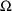
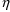
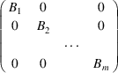
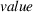
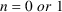
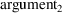

can be enclosed by single quotes or by double quotes. The
default for
can be enclosed by single quotes or by double quotes. The
default for
 is a blank.
is a blank.A partial listing of NM-TRAN control record names and options is given in Appendix I. A complete listing of all the control records can be found in NONMEM Users Guide V Appendix 3. NONMEM Users Guide VIII and on-line help describe all the options. General rules for constructing these names and options are given in this section. The reader may refer to the example of the control records given in chapter I. It is not possible for NM-TRAN to generate a NONMEM control stream which contains syntax errors. Errors in an NM-TRAN control stream are reported in a report file; see Chapter I (FMSG).
|
1. |
Record names begin with $. With NONMEM 7.2 and higher, both lower and upper case may be used for record names and all user-defined and reserved words in the control stream. Upper-case is used in this guide for clarity. |
E.g. $OMEGA
|
2. |
Option names on records may also be upper-case or lower-case. |
E.g. SIGDIGITS
|
3. |
The order of the records and the order of options within records is immaterial except where noted in the particular discussion of the record or option. | |
|
4. |
With record names and options prior to NONMEM 7, initial substrings of record or option names, and of length 3 or more, are recognized as abbreviations. |
E.g. $COVARIANCE or $COV or $COVAR
An abbreviation is a type of alias for the record or option name. For any particular record or option, there may also be other acceptable aliases; these are noted as part of the description of the particular record or option. All aliases may be abbreviated according to the convention just described.
There are exceptions such as the NOABORTFIRST option of $THETA. With NONMEM 7, some new record names (e.g., $ANNEAL) and options (e.g. $ESTIMATION record option ISAMPLE) cannot be abbreviated.
|
5. |
Text after a semicolon is regarded as a comment. |
E.g. $THETA 7 ;Mean Clearance
|
6. |
Blank-line records and records containing only comments can be included for clarity or readability. | |
|
7. |
With NONMEM VI 2.0 and later versions, the length of a single record of the NM-TRAN input file is at most 160 characters. (Previously, it was 80 characters.) With NONMEM 7.3, the maximum length is given by FSD in resource/SIZES.f90 (FSD=67000 with NONMEM 7.3). |
For readability, a record can be continued to form a contiguous block of records
E.g.
$THETA 7 ;Mean Clearance 20 ;Mean Volume
The record name, or an alias for it, physically appears only in the first record of a contiguous block. This name or alias is "understood" to appear in each continuation record of the block. Also, a record can be continued by a series of contiguous blocks, no two of which need to be contiguous to each other. In general, all the information from all records which use (or are understood to use) the same name, or use (or are understood to use) an alias for this name, is regarded as coming from a single record with that name. If this is ordered information, the ordering is determined by the ordering of the separate records.
E.g.
$THETA 7 20
$OMEGA .5 4 $THETA .7 $OMEGA .005
is equivalent to
$THETA 7 20 .7 $OMEGA .5 4 .005
The $ESTIMATION record, like the $TABLE and $SCATTER records, is an exception, as noted in the descriptions of these records.
With NONMEM 7.3 and higher, & may be used at the end of any line of the control stream to indicate that the line is to be continued, including control records as well as abbreviated code. (This is FORTRAN 90-style continuation.) If the ampersand at the end of a line is not to be interpreted as a continuation marker, but as a part of the record, then, place a ; after it. For example, an option of the $TABLE record may terminate with &.
FORMAT=s1PE15.8:160& ;
|
8. |
Options can be separated by commas and/or any number of spaces. |
E.g. MAXEVAL=400 SIGDIGITS=4, PRINT=5
|
9. |
An option of the form A=B must be contained on a single record and may contain spaces around =. A is called the option name |
and B is called the option value
E.g. MAXEVAL = 400
With an option of form A=B, the = can be omitted.
MAX = 300 or MAX 300
|
10. |
Filenames on control records may consist of as many characters as fit on a single line. A filename may not contain embedded spaces. If it contains commas, semicolons, or parentheses, or if it starts with an equal sign, then it must be surrounded by single quotes ’ or double quotes ". An option name may not be used as a filename unless it is surrounded by quotes. | |
|
11. |
The numerical values in $THETA, $OMEGA, and $SIGMA may be each up to 30 characters long, and may be described in E field notation. |
In the descriptions of the particular records, which follow in later sections, square brackets are used to surround an option or group of options, none of which need actually appear in the record. If they surround a group of options, a vertical line is used to separate these options in the description, and at most one of the options may be selected to actually appear in the record. If none are selected to appear, then the default option
indicated in boldface (if there is an option so indicated), is understood to apply.
E.g. [UNCONDITIONAL|CONDITIONAL] indicates a choice between the options UNCONDITIONAL and CONDITIONAL, and if neither are selected to appear in the record, it is understood that the first option applies.
Specific NM-TRAN control records are described in the next subsections. The first 17 records ($PROBLEM thru $SCATTERPLOT) were part of NONMEM IV, and are discussed in detail. Options are listed as of NONMEM 7.4. Options added with NONMEM V and later are not always discussed in this document, but are discussed in the help/Guide VIII documents. The remaining records (starting with B.18. $SUPERPROBLEM Record) is a listing of record types introduced with NONMEM V and later, with brief descriptions. All of these records are optional. They are listed in order in which they were added to NONMEM, with some exceptions. For additional information, see Guide VIII and on-line help.
$PROBLEM text
E.g.
$PROB THEOPHYLLINE POPULATION DATA
The text becomes a heading for the NONMEM printout.
This record is required. Only $SIZES and $SUPERPROBLEM may precede a $PROBLEM record. (See III.B.28 and III.B.18 below.) A $PROBLEM record other than the first one marks the beginning of another problem specification.
The text must be contained on a single record, and only the first 72 characters of text (starting with the second character after the record name) are used in the heading. Spaces and semicolons in the text are included "as is". The text is optional.
$INPUT @item sub 1 ~ item sub 2 ~ item sub 3 ~...@
E.g.
$INPUT ID DOSE TIME CP=DV WT
The items define the data item types that appear in the NM-TRAN data records, as well as the order of their appearance.
This record is required, and it must precede any other NM-TRAN control record in the problem specification that refers to specific data item types.
Each item has form B or A=B, where A and B are data item labels. Each data item label consists of letters (A-Z) and numerals (0-9), but it must begin with a letter. Starting with NONMEM 7.1, the underscore character _ may be used in a data item label. Starting with NONMEM 7.1, the maximum number of characters in a label is given by SD in resource/SIZES.f90. The default value is 20. With previous versions, the maximum number of characters is 4. The labels may be used in subsequent NM-TRAN control records, and they will be used as labels for data items in NONMEM output.
NM-TRAN recognizes certain
reserved labels:
ID, L1, L2, DV,
MDV, TIME, DATE, DAT1,
DAT2, DAT3, DROP
RAW_ (nmv), MRG_ (nmv), RPT_ (nmvi),
REPL_ (nm75)
The RAW_ data
item identifies template records for which NONMEM computes
and displays raw-data averages. With this feature, the
TEMPLT variable may be used in abbreviated code, and the
$OMIT record may be used.
The MRG_ data item identifies records for which NONMEM
computes and displays marginal quantities (expectations).
The RPT_ data item identifies NONMEM’s repeat data
item. It is used to mark a data record as a repetition base.
(Another way of doing this is via global "Repetition
Variables" RPTI, RPTO, RPTON, PRDFL in abbreviated
code.)
The REPL_ data item identifies NONMEM’s replication
data item. NONMEM replicates subjects from the template data
set at the start of the problem. REPL_ may be used with the
$DATA ... REPL option.
By using ID, L1, L2, DV, MDV, RAW_, MRG_, RPT_, or REPL_ as B, the user defines the NONMEM data item type whose name corresponds to the label. The NONMEM data item type whose name corresponds to ID is the same NONMEM data item type whose name corresponds to L1, but L1 has another special meaning. Use of L1 not only defines the ID data item, it also supresses automatic generated ID data items (see section II.C.4).
By using TIME as B, the user defines a time data item type; time data items can be recognized as clock times and translated to relative times (see section II.C.2 and the discussion below).
By using DATE, DAT1, DAT2, or DAT3 as B, the user defines a date data item type (see section II.C.2 and the discussion below). Usually, date data items should not appear in the NONMEM data set (see below).
By using DROP as B, the user defines a data item type which will not appear in the NONMEM data set, e.g. DATE=DROP. This is the one label that can be used more than once in the $INPUT record. Ignoring items with this label, the total number of items in a NM-TRAN data record cannot exceed a certain limit, and, if the data set is single-subject, this limit includes generated ID data items (which actually do not appear in the NM-TRAN data set).
Starting with NONMEM 7.2, this limit is given by PD in resource/SIZES.f90. The default value is 50. PD may be changed using the $SIZES record. PD also specifies the maximum number of data items in the NONMEM data set. With previous versions, the maximum number of items in both NM-TRAN and NONMEM data sets was 20.
If the user prefers to label a NONMEM data item type or a time data item type with a label (A) other than the reserved one (B), he may use the item A=B. In this case A is called a synonym for B. Alternatively, he may use the item B=A, i.e. the order of the labels A and B are reversed in the item so that the reserved label comes first. Either of the labels A and B may be used in subsequent control records of the problem specification. However, only the synonym is used as a label in NONMEM output. Both A and B can be reserved labels. Thus one type of data item can serve simultaneously as another type, e.g. ID=TIME. Another example of this is DATE=DROP.
The items DROP, A=DROP, or DROP=A are all equivalent. The label SKIP acts just as does the label DROP. The label DROP may not be used when the $DATA record contains a format specification (see section B.5).
Time data items are translated from clock times to relative times when at least one time data item contains a colon (:). Time data items are also translated from clock times to relative times when the reserved label DATE, DAT1, DAT2, or DAT3 is used. In this case the order of the fields (day, month, year) must be the same across all the date data items. This order corresponds to which label is used:
If only one field is used, it is assumed to be the day field. If two fields are used, they are assumed to be month and day fields. When two or more fields are used, the user should be careful to use, for example, DATE=DROP; otherwise, use of the nonumeric separator will raise an error during the NONMEM run.
If the data set is single-subject, ID data items are automatically generated, unless the reserved label L1 is used. A=L1 or L1=A can also be used. Generated ID data items are assigned the label .ID. (i.e. ID surrounded by dots). This label can be used in subsequent NM-TRAN control records of the problem specification.
Changes to the $INPUT record may cause changes to generated codes. In this case care should be taken in using the previous load module.
INPT is an alias for INPUT.
$INDEX [@label sub 1@|@value sub 1@] [@label sub 2@|@value sub 2@] [@label sub 3@|@value sub 3@] ...
E.g.
$INDEX DOSE 1
The labels are those of data items, as established by the $INPUT record. The values are integers no larger than the number of (non-DROP) items in the $INPUT record. Either (i) the index of the data items with label @label sub I@, or (ii) @value sub I@, whichever is chosen, is stored in INDXS(I). (The index of a data item is its position in the NONMEM data record.) For the above example, and using the $INPUT record shown in chapter I: INDXS(1)=2, and INDXS(2)=1.
This record is optional, and it need not appear unless some complete FORTRAN-coded subroutines are developed by the user, and at least one of these subroutines makes explicit use of the INDXS array.
INDXS is an array which is one of the arguments to certain user-supplied subroutines; see Guide I, section C.4.1, or Guide VI, sections III.C, IV.B, and VI.A. The array cannot be used with an abbreviated code. Therefore, the $INDEX record is not of interest to users of NM-TRAN who only use abbreviated codes.
In the above description INDXS(I) should be understood to always mean the Ith element of the INDXS array that is available to a user-written routine. With PREDPP the routine actually has access to only part of a larger INDXS array, only to elements 12-50 of the larger array. NM-TRAN stores the indices of certain data items of use to PREDPP in elements 1-11, but PREDPP renumbers elements 12-50 to 1-39 before passing INDXS as an argument to the routine.
$INDXS is an alias for $INDEX.
Commas between labels and values are optional.
$CONTR DATA=([@label sub 1@|0] [@label sub 2@|0] [@label sub 3@|0])
E.g.
$CONTR DATA=(0,TYPE)
This record defines one to three types of data items defined in the $INPUT record to be made available to subroutines CONTR, CCONTR, and MIX in the DATA array.
This record is optional and need only appear if the CONTR, CCONTR, or MIX subroutine is user-supplied and uses data items stored in the DATA array.
@label sub i@ is the label (or synonym) given in the $INPUT record for the ith data item type.
The CONTR and CCONTR subroutines
are used to define an objective function which differs from
the default (ELS) objective function. The MIX subroutine is
used to describe the mixing parameter of a mixture model;
see Guide VI, section III.L.2. See also $MIX in Chapter
IV.L.
These routines are called with individual records. An array
DATA is available in a NONMEM MODULE and changes value with
each individual record. It contains up to three types of
data items occuring in each observation record of an
individual record. For any individual record, the data item
occuring in the Ith observation record of the individual
record, having the Jth label occuring in the DATA option of
the $CONTR record, is available in DATA(I,J). If a
0 is used in the DATA option instead of a label,
then a 0 is found in DATA(I,J).
Commas between labels and 0’s are optional.
$DATA
[filename|*] [(format)] [IGNORE=@c sub 1@]
[NULL=@c sub 2@]
[IGNORE=(list)...|ACCEPT=(list)...]
[PRED_IGNORE_DATA]
[NOWIDE|WIDE]
[CHECKOUT]
[RECORDS=@n sub
1@|RECORDS=label]
[LRECL=@n sub 2@]
[NOREWIND|REWIND]
[NOOPEN] [LAST20=@n sub 3@]
[TRANSLATE=(list)]
[BLANKOK]
[MISDAT=@r@...]
[REPL=@n@...]
E.g. $DATA DATAFILE
This record gives the name of the file containing the NM-TRAN data set.
This record is required with the first problem specification, and with any problem specification where the NM-TRAN data set differs from that of the preceding problem specification.
The filename must be the first option on the record.
If the $DATA record is missing from the problem specification, the problem uses the same NONMEM data set as that used in the previous problem. With the previous problem the user might have modified data items from those found in the NONMEM data set at the beginning of that problem (e.g. the modification may have occurred in the simulation step, or in the initialization/finalization step - see Guide II, section D.2.2, Guide VI, section VI.A), and then the data set used in the current problem (NONMEM’s internal copy of the data set) contains the modified data items. Using an asterisk in the $DATA record, in place of the file name, has the same effect as omitting the $DATA record. However, when one wants to use the CHECKOUT option, as well as use the NONMEM data set from the previous problem, the asterisk must be used. In this case no other options should be used.
The format refers to a FORTRAN format specification to be used by NM-TRAN to read the NM-TRAN data records. Note that this specification is to be enclosed in parentheses. Format codes F, E, and X may be used, but not I. The format will also be used by NONMEM to read the NONMEM data records, after it had been modified to account for generated data items. If a format is provided, the label DROP cannot be used, and the WIDE and NULL options may not be used. If a format is omitted, the NM-TRAN records can still be read, and a format specification which is appropriate for reading the NONMEM data records will be generated. In this case a NONMEM data set is found in FDATA (see section II.B).
The IGNORE option specifies records to be dropped from the NONMEM data set.
When IGNORE=@c sub 1@ is coded and the character @c sub 1@ appears in column one of a (FORTRAN) record of the data set, this record does not appear in the NONMEM data set. Such records can serve as comment records in the NM-TRAN data set (see section II.C.3). The character @c sub 1@ can be any character other than a blank or semicolon. In the $DATA record it can be enclosed by single quotes or by double quotes, in which case a semi-colon is permitted. The default is IGNORE=#. That is, in the absence of IGNORE option, any record whose first character is # is treated as a comment record.
IGNORE=@ signifies that any data record having an alphabetic character or @ as its first non-blank character (not just in column 1) should be ignored. Alphabetic characters are the letters A-Z and a-z. This permits a table file having header lines to be used as an NM-TRAN data set.
IGNORE=(list) is new with NONMEM 7.
"List" is a list of one or more data item labels, with logical operators and values, of the form "label=value", "label.EQ.value", "label.NE.value", "label.GT.value", "label.GE.value", "label.LT.value", and "label.LE.value". (FORTRAN 90 logical operators such as ’==’ ’/=’ ’<’ ’<=’ ’>’ ’>=’ " may also be used.) With NONMEM 7.3, "label.NEN.value" and "label.EQN.value" are permitted. (There is no FORTRAN 90 operator for this comparison.) If the logical operator is omitted, the default is "=". With each data record, the value of the data item with the given label and the value in the list are compared according to the logical operator, and if result is "true", the record is ignored, i.e. it is not included in the NONMEM data set (see example below). Such records are called "dropped records". With "=", "==", "/=’, ".EQ." and ".NE.", the value in the data record and the value in the list are compared as character strings. Otherwise, they are converted to numeric and compared numerically. (This is the case with .NEN. and .EQN.) This comparison is made prior to time translation. Hence, the TIME item cannot be compared numerically if it contains non-numeric characters such as ":".
Note: if the
data file is a table file from a previous NONMEM run, values
that had been integers (0,1,..) in the original data file
will be real values (0.000E+00, 1.000E+00, ...) in the table
file. A comparison for equality or inequality should now be
for the real value. E.g.
IGNORE=(OCC==1.000E+00).
A data item label along with a logical operator and value is called a condition. A list may contain several conditions; these should be separated by commas, and the list should be enclosed in parentheses. Up to 100 different conditions altogether can be specified. Multiple IGNORE options with different lists may be used. A list may span one or more NM-TRAN records. The use of "=" after IGNORE is optional, but parentheses are required with this form of IGNORE. Values may be alphabetic or numeric, and may optionally be surrounded by single quotes ’ or double quotes ". Quotes are required if a value contains special characters such as =. However, a value may not contain spaces or commas. No format specification is permitted with this form of IGNORE.
A data item type may be dropped from the NONMEM data set by means of the DROP or SKIP synonym on the $INPUT record, after records are dropped due to a condition based on the data item type. E.g.,
$INPUT ... GEN=SKIP ... $DATA file IGNORE=(GEN=’M’)
Records having GEN equal to ’M’ will be dropped, and the GEN data item type will then be omitted from the NONMEM data set. A dropped data item may be any alphanumeric string (without a data item delimiter - a blank or a comma).
If there is
more than one condition, then records satisfying at least
one of these conditions will be dropped. In effect, the
conditions for dropping a record are connected by the
implied conjunction ".OR.". E.g.
IGNORE=(GEN.EQ.1,AGE.GT.60).
Records having GEN equal to 1 or AGE greater than 60 are
dropped. All others are accepted.
ACCEPT=(list)
The ACCEPT list option is identical to the IGNORE list option, except that it specifies conditions for acceptance of records. An ACCEPT list cannot be used together with an IGNORE list.
E.g.
ACCEPT=(GEN.EQ.1,AGE.GT.60).
Records having GEN equal to 1 or AGE greater than 60 are
accepted. All others are dropped.
Suppose it is
desired that records be dropped that satisfy the logical
".AND." of several conditions. This can be
implemented by using an ACCEPT list with the negations of
the conditions. For example, suppose that records to be
ignored are those having GEN=1 .AND. AGE > 60. This may
be done as follows:
ACCEPT=(GEN.NE.1,AGE.LE.60)
It is possible
to implement more complicated expressions, e.g., with nested
parentheses.
See Guide VIII Ignore_accept example.
The PRED_IGNORE_DATA option is
new to NONMEM 7.5. Data records may be dropped using by PRED
or PREDPP using the PRED_IGNORE_DATA block of abbreviated
code. See Chapter IV.E.6. This option informs NONMEM that a
PRED_IGNORE_DATA pass through the data set is required. If
the abbreviated code uses variables PRED_IGNORE_DATA or
PRED_IGNORE_DATA_TEST, this option is supplied. The explicit
option is needed if the use of the PRED_IGNORE_DATA
variables occurs in user-written or verbatim code, so that
NMTRAN is unaware of it.
(See Guide Introduction_7 "PRED_IGNORE_DATA Feature
(NM75)")
Option NULL=
specifies the character used for null data values in the
NONMEM data set. Every occurrence in the NM-TRAN data set of
a dot surrounded by blanks/commas/tab characters, or of
consecutive commas or consecutive tab characters, is
replaced by a null data item in the NONMEM data set. Null
data items are also supplied for data items that are missing
from the end of an NM-TRAN data record (there may be several
missing from the end of any given record) but that are
defined in the $INPUT record. This null data item consists
of the specified character
, and it occupies the last position in the field of the
NONMEM data set into which it is placed. The character
can be enclosed by single quotes or by double quotes. The
default for
is a blank.
The option NOWIDE specifies that the FORTRAN records of the NONMEM data set, generated by NM-TRAN, are to consist of up to 80 characters. In order to accomplish this NM-TRAN may need to suppress space between fields or generate multi-line NONMEM data records. This is the default. The option WIDE specifies that single-line NONMEM data records are to be generated if possible. These records always include at least one space between fields. With this option the records can be up to 300 characters. (Note that they will be multi-line if 300 characters is too few.) They comprise a NONMEM data set which may be more legible than one obtained without using WIDE, and which can be processed by a program other than NONMEM. With this option, there will be no FINISH (FIN) record in the NONMEM data set. (A FINISH record is generated with there are more than 99999999 records in the NONMEM data set.) WIDE also provides an extra character for elapsed times, so that they can accommodate the number of hours in (approximately) 4166 days with a leading space. Six digits (xxxxxx.xx) are provided.
The option CHECKOUT specifies that NONMEM is to run in data checkout mode. In this mode, tables and scatterplots can be requested, so that the data (as "understood by NONMEM") can be examined, but no computations involving the model are performed, so that this examination cannot be hindered by problems with the logic in user-written routines or abbreviated codes. These routines and codes need only be syntactically correct. The predictions, residuals, weighted residuals, ETA’s and PRED-defined items that are displayed in tables and scatterplots (see sections B.16 and IV.F) are all 0. CHECKDATA can be used as an alias.
When the RECORDS=
 option is used, the number
option is used, the number
 is the number of data records to be read from the NM-TRAN
data set. Comment records are not counted. If NM-TRAN does
not drop any records from its data set (see IGNORE list and
ACCEPT list), then
is the number of data records to be read from the NM-TRAN
data set. Comment records are not counted. If NM-TRAN does
not drop any records from its data set (see IGNORE list and
ACCEPT list), then
 is also the number of records written to the NONMEM data
set. If NM-TRAN drops records, then the total number of
records written to the NONMEM data set is
is also the number of records written to the NONMEM data
set. If NM-TRAN drops records, then the total number of
records written to the NONMEM data set is
 minus the number of dropped records. This number must be no
more than 99,999,999. When the option is omitted, then there
is no limit to the number of data records in the NM-TRAN
data set. In this case the file is read to a FINISH record
(see below), or to the physical end of file, whichever comes
first. However, if there are 100,000,000 or more records,
then it is suggested that a FINISH record be used since in
this case and when, moreover, the NONMEM data set happens to
coincide with the NM-TRAN data set, the NONMEM data set
needs a FINISH record.
minus the number of dropped records. This number must be no
more than 99,999,999. When the option is omitted, then there
is no limit to the number of data records in the NM-TRAN
data set. In this case the file is read to a FINISH record
(see below), or to the physical end of file, whichever comes
first. However, if there are 100,000,000 or more records,
then it is suggested that a FINISH record be used since in
this case and when, moreover, the NONMEM data set happens to
coincide with the NM-TRAN data set, the NONMEM data set
needs a FINISH record.
RECORDS=label
If the option is coded as RECORDS=label, where label is a data item label, NM-TRAN understands the data records for the problem to start with the first data record of the NM-TRAN data set (at the place where the file is positioned before data records are read; see the NOREWIND option), and to include as well, those and only those subsequent contiguous data records having the same value of the data item as does the first record. It counts the total number of these data records, minus any comment or dropped records, and puts this number in the NONMEM control file.
In particular, the ID label may be used (or alternatively, the option may be coded RECORDS=IR, RECORDS=INDREC, or RECORDS=INDIVIDUALRECORD). If a label other than ID is used, the $INPUT record must precede the $DATA record. If the data are single-subject data, the ID data items used to determine the data records for the problem are those labeled ID (not .ID.).
If there is more than one problem specification with a $DATA record that includes an option of the form RECORDS=label, then either none of these $DATA records may also include a format specification, or all of them must include the same format specification.
The LRECL option is only needed when the format is omitted, and when either (i) the operating system (e.g. IBM/CMS) raises a fatal error when a FORTRAN program tries to read more characters from a logical record than the number of characters in the record, or (ii) the operating system imposes a maximum record length which is smaller than 999 characters (e.g. CRAY/CTSS). The number is the number of characters in the NM-TRAN data records.
NOREWIND specifies that the file is not to be rewound before it is read, and REWIND specifies that the file is to be rewound. These options are ignored if used on the $DATA record appearing in the first problem specification of the NM-TRAN control stream, or on a $DATA record appearing in a subsequent problem specification when this record contains a file name different from that contained on the $DATA record of the prior problem specification. In these cases the file is automatically rewound. The REWIND and NOREWIND options are significant only when there are multiple problem specifications in the NM-TRAN control stream, and when the $DATA records appearing in two consecutive problem specifications, corresponding to two problems A and B, contain the same file name. In this situation:
When the REWIND option is used on the the $DATA record for problem B, the first NM-TRAN data set on the file is re-used for problem B. If NM-TRAN does not modify this data set, then an instruction to rewind the (same) file is also contained in the NONMEM control stream problem specification for problem B. If NM-TRAN does modify the data set, then the NONMEM data set for problem B is placed on FDATA after the last NONMEM data set already present on FDATA, and no instruction to rewind FDATA is contained in the NONMEM control stream problem specification for problem B.
If the NOREWIND option is used on the $DATA record for problem B, or neither option is used, then the file is not rewound, and the NM-TRAN data set on this file that follows the one used for problem A is used for problem B. In this case note that the $DATA record with problem A must have contained the RECORDS option or the NM-TRAN data set used for problem A must end with a FINISH record. Also in this case, no instruction to rewind the file containing the NONMEM data set for problem B (whether this file is the file named in the $DATA record or whether it is FDATA) is contained in the NONMEM control stream problem specification for problem B.
NOOPEN specifies that the file is not to be opened by NM-TRAN. It permits a data file to be created by one problem and used in a subsequent problem of the same run.
Translation of NM-TRAN data
records is a slower process than is translation of NM-TRAN
control records. However, usually during a data analysis,
changes are made to the NM-TRAN control records between
runs, but not to the NM-TRAN data records. With large data
sets once translation of the data records has been performed
successfully, the output in FDATA can be stored (in a file
of a different name) and used with subsequent NM-TRAN runs.
In a subsequent run, use the format specification and value
for
 found in the problem summary pages of the NONMEM output from
the first run. If data items were dropped or generated, then
use the list of "LABELS FOR DATA ITEMS", found in
this earlier output, for the list of labels needed in the
$INPUT record. If the data set is single-subject, and ID
data items were generated, use L1 for the label of these
data items.
found in the problem summary pages of the NONMEM output from
the first run. If data items were dropped or generated, then
use the list of "LABELS FOR DATA ITEMS", found in
this earlier output, for the list of labels needed in the
$INPUT record. If the data set is single-subject, and ID
data items were generated, use L1 for the label of these
data items.
LAST20, BLANKOK, TRANSLATE
See Chapter II
MISDAT= ...(nm74) Defines one or more particular numerical values to indicate a missing data value in the data set, which is displayed on $TABLE outputs, but is safely interpreted as 0 by other steps of NONMEM.
REPL=n (NM75) When the
REPL=n option of $DATA is coded, the NONMEM data set is
considered to be a template data set. NONMEM itself
replicates the template data set n times at the start of the
problem to create an expanded NONMEM data set. The REPL
option may be used with the REPL_ data item. If both are
used the REPL_ data item applies first, and the REPL option
applies second. The REPL option and REPL_ data item are
meant to be used with $SIMULATION or $DESIGN.
(See Guide Introduction_7 "$DATA REPL (NM75)")
See Introduction to NONMEM 7 and Guide VIII and on-line help.
$INFILE is an alias for $DATA.
When a format is omitted, a FINISH record consists of the characters FIN appearing anywhere in the record (the other characters are all blank). When a format is provided, a FINISH record must have the form described in Guide II, section D.2.3.
$SUBROUTINES
[subname1 = name1] [subname2 = name2] ...
[SUBROUTINES=kind]
E.g.
$SUBROUTINES PRED=mypred
This record gives names associated with any subroutines which are user-supplied, i.e. for which abbreviated codes are not given. User-supplied FORTRAN codes are copied to the FSUBS file. The names and subnames are also listed in the FREPORT file. This file is needed for documentation purposes, and it also can be used as input to a program such as nmfe that creates system commands for running NONMEM.
This record is only required with the first problem specification, and then only if the record contains some option. It applies to all problem specifications in the control stream, and it must not appear with a problem specification other than the first.
A subname may be chosen from the list: PRED, CRIT, CONTR, CCONTR, CONPAR, USMETA, SPTWO, MIX, PRIOR
The names on the right are the names of files containing FORTRAN 90/95 code. These follow the usual rules for filenames on control records; see A.10 above. An extension such as ".f" or ".f90" may be part of the file name for descriptive purposes, but the file itself should contain FORTRAN 90/95 code. A file may contain more than one FORTRAN subroutine. A name could be the same as the subname, but a subname is generic, and a name which is more specifically related to the actual code comprising the subroutine can be more useful. One subname-name pair should be used for each subroutine which is user-supplied.
If the PRED subroutine is not user-supplied, so that PRED is not used as a subname, then an abbreviated code must be given for $PRED (unless PREDPP is used; see chapter V). Abbreviated code can also be given for $MIX; see Chapter IV.L. The $PRIOR record can be used to provide instructions for a generated PRIOR subroutine in FSUBS; see B.23 below. FORTRAN code must be provided if the remaining subnames are user-supplied.
There may exist one or more "other" user-supplied subroutines used by one of the subroutines listed above. The special subname OTHER can be used in conjunction with such a routine; it is set to a name of a file to be read by NM-TRAN. (A subroutine B, called by subroutine A, can be included in the file containing A. In this case OTHER would not be set to a name for B.) Unlike the other subnames, OTHER can appear up to forty times in the $SUBROUTINES record, and used for up to forty unique file names. Here are some examples.
The OTHER option is used to supply the FORTRAN code for user-written functions, e.g., the reserved functions FUNCA, FUNCB, FUNCC, etc., or, with NONMEM 74, functions declared using the $ABBR FUNCTION option. Suppose there is one such file and its name is funcfile. (File funcfile may contain more than one FUNCTION.) It should be listed on the $SUBROUTINES record. E.g.,
$SUBROUTINES ... OTHER=funcfile
Another example of the use of OTHER has to do with the NONMEM subroutine CONSTRAINT. The default version found in NONMEM’s source directory (source/CONSTRAINT.f90) performs simulated annealing, and uses information from the $ANNEAL record. See section B.29. below. The OTHER option is not needed if the default version is to be used. See anneal.ctl in NONMEM’s example directory.
A user-written subroutine CONSTRAINT may be used instead to provide any kind of constraint pattern on any parameters. Example9.ctl in NONMEM’s examples directory contains
$SUBROUTINES ... OTHER=aneal.f90
File aneal.f90 contains an alternative version of subroutine CONSTRAINT and is discussed in Introduction to NONMEM 7 "Example 9: Simulated Annealing For Saem using Constraint Subroutine."
If the SUBROUTINES option is not used, it is understood to be present with the option "kind" equal to DOUBLE. DP and D are aliases for DOUBLE. SUBS is an alias for SUBROUTINES. The SUBROUTINES option may be coded with the part SUBROUTINES= missing.
E.g.
$SUB DP
$ABBREVIATED
[COMRES=
 ] [COMSAV=
] [COMSAV=
 ]
]
[DERIV2=NO]
[DERIV2=NOCOMMON]
[DERIV1=NO]
[FASTDER | NOFASTDER]
[CHECKMU | NOCHECKMU]
[DES=COMPACT | DES=FULL]
[REPLACE left_string = right_string ] ...
[DECLARE [type] [DOWHILE] name [(dimension
[,dimension])] ...
[PROTECT]
[FUNCTION
function_name(input_vector_name,dimension[,usage])]
[VECTOR input_vector_name(dimension)]
E.g. $ABBREVIATED COMRES=2
Optional. May be used when $PK, $ERROR, or $PRED abbreviated code is present. Must precede all blocks of abbreviated code. appear. Then it only should appear with the first problem specification, and before any abbreviated code. With NONMEM 7.4, may also be used when there is no abbreviated code. For example, $ABBR REPLACE may be used for label substitution in NONMEM report files.
Abbreviated code is described in Chapters IV and V.
COMRES ("common reserve") and COMSAV ("common save")
One use of the option
COMRES involves the presence of both abbreviated
and user-supplied subroutines. Values for variables defined
in abbreviated codes may be displayed in tables and
scatterplots. These variables are listed (i.e. their values
are stored) in a NONMEM MODULE NMPRD4 in the generated
subroutine. (With versions of NONMEM prior to nm7, NMPRD4
was a named FORTRAN common, hence the use of options
"COM...".) User-supplied FORTRAN routines may also
list variables whose values are to be displayed in NMPRD4.
The first
positions in NMPRD4 are reserved for the use of these
routines; generated subroutines will not list variables
defined in abbreviated codes in these positions. If there
are no abbreviated codes, not only is COMRES not
needed for this purpose, it may not be used. All variables
listed in NMPRD4 must be double precision. The number
 can be nonnegative, and if the option is not used, it is
understood to be 0. It can also be -1, in which case no
variables defined in abbreviated codes are listed in NMPRD4.
In this regard, see also section IV.H.
can be nonnegative, and if the option is not used, it is
understood to be 0. It can also be -1, in which case no
variables defined in abbreviated codes are listed in NMPRD4.
In this regard, see also section IV.H.
All variables defined in an abbreviated code are listed in NMPRD4, whether or not their values are displayed. Thus with PREDPP, where there may be more than one abbreviated code, each such variable is recognized as the same variable in all abbreviated codes in which it is used. If it desireable to avoid this type of global definition, then the option value -1 can be used. See also section IV.H.
The option COMSAV may
be used when the variable COMACT is used in
abbreviated code (see section IV.E.2). It defines the SAVE
region of NMPRD4. In this case the option COMRES
should also be used, and
 must satisfy
.
must satisfy
.
The next two options primarily concern ways to avoid changing and recompiling NM-TRAN or NONMEM source code when NM-TRAN produces error messages indicating that certain internal table sizes are found to be too small for a given problem; see Guide III. In this regard, the option COMRES=-1 can also be useful (see also section IV.H). With NONMEM 7, NM-TRAN allocates most internal arrays dynamically as needed. The $SIZES record can be used to make other arrays larger. Internal table sizes are unlikely to be exceeded. However, when there is a great deal of abbreviated code, the generated code and the NONMEM load module may be very large, which can slow the execution of NM-TRAN and NONMEM. The following options may still be useful.
DERIV2=NO and DERIV2=NOCOMMON
When the option
DERIV2=NO is used, code to compute second-partial
derivatives with respect to
 variables is not generated from abbreviated codes. These
derivatives are only needed when the Laplacian estimation
method is used (see section B.14). So in order to save CPU
time one might be tempted to use this option when the
Laplacian method is not used. However, when the Laplacian
method is not used, the code computing the second
derivatives is never executed. Therefore usually, there is
little reason to include the option. It is generally
recommended that the option not appear, so that with
generated subroutines, a load module that computes these
derivatives can also be used in a subsequent run which uses
the Laplacian method. If it does appear, if PREDPP is not
used, and if the Laplacian estimation method is requested in
a subsequent run using the same load module, then, in
effect, the first-order conditional estimation method is
used in that run, although using somewhat more computer time
than is necessary. However, care should be taken to avoid
this situation. If the option appears, and PREDPP is used,
then the Laplacian estimation method must not be requested
in a subsequent run using the same load module, even when
all second-partial derivatives that might be computed are
uniformly zero (in which case code computing these zeros is
actually not generated whether or not the option
appears).
variables is not generated from abbreviated codes. These
derivatives are only needed when the Laplacian estimation
method is used (see section B.14). So in order to save CPU
time one might be tempted to use this option when the
Laplacian method is not used. However, when the Laplacian
method is not used, the code computing the second
derivatives is never executed. Therefore usually, there is
little reason to include the option. It is generally
recommended that the option not appear, so that with
generated subroutines, a load module that computes these
derivatives can also be used in a subsequent run which uses
the Laplacian method. If it does appear, if PREDPP is not
used, and if the Laplacian estimation method is requested in
a subsequent run using the same load module, then, in
effect, the first-order conditional estimation method is
used in that run, although using somewhat more computer time
than is necessary. However, care should be taken to avoid
this situation. If the option appears, and PREDPP is used,
then the Laplacian estimation method must not be requested
in a subsequent run using the same load module, even when
all second-partial derivatives that might be computed are
uniformly zero (in which case code computing these zeros is
actually not generated whether or not the option
appears).
Values of second-partial derivatives of a variable defined in an abbreviated code are stored in other variables defined in the generated routine. Normally, these variables are listed are also listed in NMPRD4 (see above). When the option DERIV2=NOCOMMON is used, these variables are not listed in NMPRD4. In this case these variables are not displayable. In this case also, if PREDPP is used, no variable defined in the abbreviated code for PK, may be referenced in the abbreviated code for ERROR.
In the generated subroutine, NM-TRAN collects (re-arranges) all code for second derivative computation so that only a few tests (for MSEC==1; see Chapter IV.E.4) are needed to compute them when NONMEM indicates that it needs second-partial derivatives, and skip them otherwise.
FASTDER and NOFASTDER (nm72)
Code to compute first-partial
derivatives with respect to
 variables is always generated from abbreviated codes. These
derivatives are almost always needed by classical NONMEM
methods with population data. However, NONMEM does not
always use these derivatives for the newer Bayesian methods.
Since NONMEM 7.2, NM-TRAN collects (re-arranges) all code
for first derivative computation so that only a few tests
(for FIRSTEM==1; see Chapter IV.E.4) are needed to compute
them when NONMEM indicates that it needs first-partial
derivatives, and skip them otherwise. This is explicitly
requested by option FASTDER, which is the default.
The collection (re-arrangement) of first derivative code can
be prevented with option NOFASTDER.
variables is always generated from abbreviated codes. These
derivatives are almost always needed by classical NONMEM
methods with population data. However, NONMEM does not
always use these derivatives for the newer Bayesian methods.
Since NONMEM 7.2, NM-TRAN collects (re-arranges) all code
for first derivative computation so that only a few tests
(for FIRSTEM==1; see Chapter IV.E.4) are needed to compute
them when NONMEM indicates that it needs first-partial
derivatives, and skip them otherwise. This is explicitly
requested by option FASTDER, which is the default.
The collection (re-arrangement) of first derivative code can
be prevented with option NOFASTDER.
DERIV1=NO (nm74)
With NONMEM 7.4, DERIV1=NO prevents the computation of first derivatives.
CHECKMU and NOCHECKMU (nm73)
Abbreviated code may contain statements for the MU model, which is used in NONMEM 7 EM (Expectation Maximization) methods and Gibbs sampling methods. See Chapter IV K.3. With NONMEM 7.3, NM-TRAN checks the MU model statements and issues warning messages if they appear to contain mistakes. This can take a long time for large control streams. For some models, NM-TRAN may be unable to do so, or may issue inappropriate warnings. Option NOCHECKMU can be used to prevent NM-TRAN from attempting to check the MU model statements. Option CHECKMU requests that MU model statements be checked, and is the default. Neither option affects the generated code.
DES=FULL
Requests that arrays of the DES routine are stored in non-compact form. With $ESTIMATION METHOD=COND LAPLACIAN, the option NUMERICAL is also required. DES=FULL is the default with ADVAN9 and ADVAN15 and ADVAN17. (Prior to NONMEM 7.4, FULL was required with ADVAN13.)
DES=COMPACT
Arrays of the DES routine are stored in compact form. Required with Laplacian method; optional otherwise. This is the default, except with ADVAN9 and ADVAN15 and ADVAN17.
$ABBREVIATED REPLACE option (nm73)
Any character string may be replaced in abbreviated code. In particular, this allows for symbolic labeling of thetas, etas, and epsilons. For example,
$ABBR REPLACE ETA(CL)=ETA(5)
The characters ETA(CL) are replaced by
ETA(5) where ever they appear in abbreviated code.
See Guide VIII for more features of $ABBR REPLACE.
See $OMEGA and $SIGMA record for an alternate way of naming
the ETA and EPS using NAMES and VALUES options.
With NONMEM 74, use of this option may affect the NONMEM report file, even when there is no abbreviated code.
Either ETA(CL) or ETA5 may be listed in the $TABLE or $SCATTER records, and the label in the NONMEM report file is "ETA(CL)". This is called label substitution.
The $ESTIMATION, $TABLE, $SCATTER, and $DEFAULT records all have an option NOSUB that can be used to control label substitution for that portion of the report. In general, with NOSUB=0, label substitution occurs. E.g., the label in the NONMEM report file is "ETA(CL)". This is the default. With NOSUB=1, label substitution is turned off. E.g., the label is "ETA5".
Label substitution is never made in the additional output files *.ext, ,phi, etc., to maintain their third party software readability.
Compartment names may be explicitly replaced. For example,
$ABBR REPLACE A(DEPOT)=A(1) $ABBR REPLACE DADT(DEPOT)=DADT(1) ... $DES DADT(DEPOT)=-KA*A(DEPOT)
This is called "explicit" compartment name substitution. With NONMEM 7.5, compare the "implicit" compartment name substitution feature of the $MODEL record.
The REPLACE option also allows replacement with selection. This provides a compact way of writing complicated abbreviated code. Here is an example of replacement with selection by data item. Suppose OCC is a data item.
$ABBR REPLACE THETA(OCC)=THETA(4,7)
Supppose the abbreviated code is:
TVCL=THETA(OCC)
The generated code is:
IF (OCC==1) TVCL=THETA(4) IF (OCC==2) TVCL=THETA(7)
Here is an example of replacement with selection by data item and parameter:
$ABBR REPLACE THETA(SID_KA)=THETA(4,6) $ABBR REPLACE THETA(SID_CL)=THETA(5,7) ... $PK KA=THETA(SID_KA) CL=THETA(SID_CL)
The generated code is
IF (SID==1) KA=THETA(4) IF (SID==2) KA=THETA(6) IF (SID==1) CL=THETA(5) IF (SID==2) CL=THETA(7)
A short-hand notation may be used to describe a series of values, e.g.,
$ABBR REPLACE THETA(SID_KA)=THETA(,4 to 13 by 3) is equivalent to $ABBR REPLACE THETA(SID_KA)=THETA(4,7,10,13)
$ABBREVIATED DECLARE option (nm73)
Integers and arrays may be declared and used in abbreviated code:
$ABBR DECLARE DOSE(100),DOSETIME(100) $ABBR DECLARE INTEGER I $ABBR DECLARE DOWHILE I
One or names may be coded. They are referred to as declared variables. If INTEGER or DOWHILE is coded, the type of the variable is integer. Otherwise, the type of the variable is double precision. If one or two dimensions are declared, the variable being declared is an array. Declared variables are global, i.e., are defined in all blocks of abbreviated code. Declared variables that are not INTEGER or DOWHILE will be random variables if they are assigned in a statement whose right-side involves ETA’s or EPS’s. Declared variables are not known to or used by NONMEM or PREDPP.
See IV.K.2 for an example.
$ABBREVIATED FUNCTION option (nm74)
In NONMEM 7.4 the $ABBR FUNCTION option allows user-defined function names and user-defined argument vector names. The dimensions of the argument vector and the maximum number of times a given function name may appear in abbreviated code is user-specified.
See Chapter IV Section IV.J.7 $ABBR FUNCTION and $ABBR VECTOR
$ABBREVIATED VECTOR option (nm74)
In NONMEM 7.4 the $ABBR VECTOR option allows user-defined vector names to be defined independently of any function.
See Chapter IV Section IV.J.7 $ABBR FUNCTION and $ABBR VECTOR
$ABBREVIATED PROTECT option (nm74)
With NONMEM 7.4, a series of routines are available that protect against domain violations, divide by zero, and floating point overflows. Each of these routines start with the letter P, followed by the name of the mathematical operation they are to perform. For example, PLOG is the protective code routine that performs the LOG operation. With $ABBR PROTECT, NMTRAN will automatically replace all relevant function names with the P name.
See Chapter IV Section IV.J.6. PROTECT functions
$PRED
the abbreviated code
This record gives an abbreviated code for the PRED routine. The syntax of an abbreviated code is described in chapter IV.
This record is optional. If it appears, it must be with the first problem specification, and only with this problem specification.
$THETA
 [
] [
[
] [
 ] ...
] ...
[(
)x
 ]
]
[label=
 ... FIXED]
... FIXED]
[NAMES (label ...)value ...]
[NUMBERPOINTS=n]
[ABORT|NOABORT|NOABORTFIRST]
E.g. $THETA (.1,3.,5.) (.008,.08,.5) (.004,.04,.9)
This record gives initial
estimates for
 ’s, as well as bounds on the final estimates.
’s, as well as bounds on the final estimates.
This record is required only if
the statistical model contains
 parameters (most models do). When a $MSFI record appears in
the problem specification, the $THETA record should not
appear.
parameters (most models do). When a $MSFI record appears in
the problem specification, the $THETA record should not
appear.
A value has one of four forms:
where init is the initial estimate, and low and up are lower and upper bounds respectively. The lower bound can be -INF, i.e. , and the upper bound can be INF, i.e. , unless form 3 is used, in which case both bounds must be finite numbers. Form 3 is used when the user requires some help in obtaining an initial estimate for the parameter. Usually, though, the user should be able to develop a reasonable initial estimate, and when he can, there is some savings in computation time. An initial estimate equal to 0 is not allowed, unless the FIXED option is used. Use of this option indicates that the final parameter estimate is to be constrained to equal the initial parameter estimate. If this option is used with form 2, then low, init and up must all be equal.
Another example:
$THETA 3 FIXED (-INF,.08,.5) (.004,,.9)
where the three forms used are 1,2 and 3, in that order.
Parentheses around init with form 1 are optional. The designation INF can also be coded INFINITY, INFIN, or 1000000. The character +’ can precede INF, as can the character ’-’. Integers need not have decimal points.
With NONMEM 7.2, form 4 may be used. Any initial value or group of initial values may be enclosed in parentheses and followed by "x ", which means to replicate the values within parentheses n times ("repeated value"). The values within the parenthesis may have any of the above forms. For example, the following two are equivalent:
$THETA 2 2 2 2 (0.001,0.1,1000) (0.001,0.1,1000) (0.001,0.1,1000) (0.5 FIXED) (0.5 FIXED)
$THETA (2)x4 (0.001,0.1,1000)x3 (0.5 FIXED)x2
If form 3 is used, a search for
an initial estimate is undertaken by NONMEM (not NM-TRAN). A
number of points in a subspace of the
 parameter space will be examined. This subspace consists of
the multidimensional rectangle formed by the lower and upper
bounds for all parameters whose values are of form 3. The
number of points examined will be automatically determined
by NONMEM, or it can be specified by the number n with the
NUMBERPOINTS option. The options ABORT and
NOABORT and NOABORTFIRST apply during the
search. For information concerning these option, see section
IV.G.
parameter space will be examined. This subspace consists of
the multidimensional rectangle formed by the lower and upper
bounds for all parameters whose values are of form 3. The
number of points examined will be automatically determined
by NONMEM, or it can be specified by the number n with the
NUMBERPOINTS option. The options ABORT and
NOABORT and NOABORTFIRST apply during the
search. For information concerning these option, see section
IV.G.
Aliases for NUMBERPOINTS are: NUM, NUMPTS, NUMBERPTS. This option can occur at the end of the record, or at the beginning, or between two values. THTA is an alias for THETA.
With NONMEM 7.4, when initial thetas are to be estimated, evaluations can now be done for FOCE and LAPLACE, not just for FO.
Commas between values are optional, except with form 3.
Records $THETAI and $THETAR may be used to generate subroutines that transform the initial and final values of THETA. See Chapter IV Sections M and N.
With NONMEM 7.5, the $THETA record may specify symbolic label substitution. For example,
$THETA CL=(0.0,7.0) V1=(5.0 fixed) This is equivalent to$ABBR REPLACE THETA(CL)=THETA(1) $ABBR REPLACE THETA(V1)=THETA(2) $THETA (0.0,7.0) (5.0 fixed)
The symbolic subscript may be used for THETA in abbreviated code, and will also identify this element of THETA in the NONMEM output. (Only the first 9 characters of the label will appear).
With NONMEM 7.5, the $THETA record can define one or more thetas and initial values in a compact way. For example,
$THETA NAMES(V1,CL,Q,V2) (0.0,7.0) (0.0,7.0) (0.0,7.0) 7
$OMEGA
[DIAGONAL(n) | BLOCK(n) | BLOCK(n)
SAME(m) | BLOCK SAME(m)]
[[
 ] [
] [
] [
] [
 ] ...
] ...
[(
 ,
,
 ...) x
...) x
 ]
]
[BLOCK(n) VALUES(diag,odiag)]
[label=
] ...
[BLOCK(n) [NAMES (
 ,...,
)] [VALUES (diag,odiag)]
,...,
)] [VALUES (diag,odiag)]
[FIXED] [UNINT]
[VARIANCE|STANDARD] [COVARIANCE|CORRELATON] [CHOLESKY]
E.g.
$OMEGA BLOCK(3) 6. .005 .3 .0002 .006 .4
This record gives initial
estimates for elements of the

matrix, i.e. the variances and covariances of the
 variables in the statistical model. Constraints on
variables in the statistical model. Constraints on
 are also indicated.
are also indicated.
This record should appear only
if the statistical model contains
 variables. If it appears, then there must be one such record
corresponding to each block of
variables. If it appears, then there must be one such record
corresponding to each block of
 , and the order of these records in the control stream must
correspond to the order of the blocks. The values in an
$OMEGA record are the initial estimates for the elements of
the corresponding block. Under some circumstances $OMEGA
records may or may not appear, and the equivalent effect is
achieved in either case (see below). When a $MSFI record
appears, no $OMEGA records should appear. When PREDPP is
used, and a $PK record does not appear, while a $ERROR
record does appear, certain care must be taken with the
$OMEGA record; see section V.6.
, and the order of these records in the control stream must
correspond to the order of the blocks. The values in an
$OMEGA record are the initial estimates for the elements of
the corresponding block. Under some circumstances $OMEGA
records may or may not appear, and the equivalent effect is
achieved in either case (see below). When a $MSFI record
appears, no $OMEGA records should appear. When PREDPP is
used, and a $PK record does not appear, while a $ERROR
record does appear, certain care must be taken with the
$OMEGA record; see section V.6.
 can be considered to be in block diagonal form with blocks
,
can be considered to be in block diagonal form with blocks
,
 , ...,
, ...,
 (submatrices of
(submatrices of
 ):
):
This form need not be unique,
and there may be only one block (which is most usual). The
following description applies to the
 th block,
th block,
 .
.
If the DIAGONAL option
is used, it must precede the values. In this case
 is constrained to be diagonal, and the values are the
initial estimates of its diagonal elements given in the
diagonal order. The number n is the dimension of
is constrained to be diagonal, and the values are the
initial estimates of its diagonal elements given in the
diagonal order. The number n is the dimension of
 . In addition, a final estimate of an individual element of
a diagonal block can be constrained to be equal to the
initial estimate of the element by using the FIXED
option. The value giving the initial estimate should be
coded with any one of the forms:
. In addition, a final estimate of an individual element of
a diagonal block can be constrained to be equal to the
initial estimate of the element by using the FIXED
option. The value giving the initial estimate should be
coded with any one of the forms:
init FIXED
(init FIXED)
(FIXED init)
If the BLOCK option is
used, it must precede the values. In this case the form of
 is unconstrained, and the values are the initial estimates
of its lower triangle elements given in row-wise order. The
number n is the dimension of
is unconstrained, and the values are the initial estimates
of its lower triangle elements given in row-wise order. The
number n is the dimension of
 . If FIXED option is used, all the final
estimates of the elements of
. If FIXED option is used, all the final
estimates of the elements of
 are constrained to be equal to the initial estimates of
these elements.
are constrained to be equal to the initial estimates of
these elements.
If the BLOCK(n)
SAME or BLOCK SAME option is used,
 is constrained to be equal to
. In this case
must be greater than 1, the number n (if it is given) must
be the dimension of
is constrained to be equal to
. In this case
must be greater than 1, the number n (if it is given) must
be the dimension of
 , and values are not given.
, and values are not given.
With NONMEM 7.3, SAME(m) is
permitted . If m is present, then this record is equivalent
to m identical records without (m). E.g.,
$OMEGA BLOCK(2) SAME(3)
is equivalent to
$OMEGA BLOCK(2) SAME $OMEGA BLOCK(2) SAME $OMEGA BLOCK(2) SAME
If some of the values in a record are omitted (other than a record with the BLOCK(n) SAME or BLOCK SAME option), then all values in the record must be omitted, and NONMEM will try to obtain initial estimates for the elements of the block. In this case, if the DIAGONAL option is used, it must appear explicitly in the record. Often, though, the user should be able to develop reasonable initial estimates, and when he can, there may be a little savings in computation time.
If no $OMEGA records appear, if no $MSFI record appears, but  variables are used in an abbreviated code, then it is assumed that a record
$OMEGA DIAGONAL(n)
where n is the largest index
used with an
 variable in all abbreviated codes, might have equivalently
been used. (If, though, with PREDPP an abbreviated code for
PK is not used, while an abbreviated code for ERROR is used,
see section V.6.)
variable in all abbreviated codes, might have equivalently
been used. (If, though, with PREDPP an abbreviated code for
PK is not used, while an abbreviated code for ERROR is used,
see section V.6.)
With the BLOCK option,
the FIXED option can occur anywhere among the list
of values. These values (of the lower triangle) are given in
row-wise order, i.e.
,
 ,
,
 , ...,
,
, ...,
,
 , ...,
, ...,
 .
.
Commas between values are optional.
An initial estimate of an
element of a diagonal block must be >0, or it can be 0 if
the FIXED option is used with it. An initial
estimate of a non-diagonally-constrained block must be
positive definite, or it can be (uniformly) 0 if the
FIXED option is used with it. (In any case the
initial estimates of
 and
and
 cannot both be 0 unless the Simulation Step is the only step
implemented.)
cannot both be 0 unless the Simulation Step is the only step
implemented.)
The NM-TRAN translation of $OMEGA records is such that new blocks in addition to , , etc. may be created. This should be transparent to the user, except that he will see additional blocks listed in the problem summary output by NONMEM.
With NONMEM V, an initial
estimate of a diagonal block of either the OMEGA or SIGMA
matrices may have a band symmetric form, in which case the
final estimate has the same form. That is, given the
diagonal and a group of contiguous subdiagonals
symmetrically ocurring across the diagonal, the elements off
both the diagonal and the subdiagonals are constrained to be
zero. To specify the initial estimates of such a block, the
initial estimates of those elements that are to be
constrained to 0 should be given as 0, while all other
initial estimates should be given as nonzero. E.g., with
these structures for $OMEGA BLOCK(3), the 0’s are
preserved:
x
0x
00x
x
xx
0xx
With NONMEM 7.3 if the initial
estimate of a block is not positive definite because of
rounding errors, a value will be added to the diagonal
elements to make it positive definite. A message in the
NONMEM report file will indicate that this was done. E.g.,
DIAGONAL SHIFT OF 1.1000E-03 WAS IMPOSED TO ENSURE POSITIVE
DEFINITENESS
With NONMEM 7.3, (
 )x
)x
 is permitted, so that repeated inputs of $OMEGA may be
entered easily. Any initial value or group of initial values
may be enclosed in parentheses and followed by
"xn" which means to replicate the items n times
("repeated values"). The item to be repeated must
always be in parentheses, and the xn must always be
immediately after the item, not before it (4x(0.2) is not
permitted). Here is an example:
is permitted, so that repeated inputs of $OMEGA may be
entered easily. Any initial value or group of initial values
may be enclosed in parentheses and followed by
"xn" which means to replicate the items n times
("repeated values"). The item to be repeated must
always be in parentheses, and the xn must always be
immediately after the item, not before it (4x(0.2) is not
permitted). Here is an example:
$OMEGA BLOCK(6) 0.1 0.01 0.1 (0.01)x2 0.1 (0.01)x3 0.1 (0.01)x4 0.1 (0.01)x5 0.1
With NONMEM 7.3, new options are available.
$OMEGA BLOCK(n) VALUES(diag,odiag)
This supplies initial values for a block such that the initial estimates of the diagonal elements are all the same, specified by "diag", and the initial estimates of the off-diagonal elements are all the same, specified by "odiag". If present, VALUES must follow BLOCK.
The above example could be coded
$OMEGA BLOCK(6) VALUES(0.1,0.01)
For fixed block (such as for omega priors):
$OMEGA BLOCK(6) FIX VALUES(0.15,0.0)
The following options may follow VALUES or be placed between BLOCK and VALUES.
VARIANCE indicates that all initial estimates given for diagonal elements are understood to be initial estimates of variances of etas. This is the default.
STANDARD indicates that all initial estimates given for diagonal elements are understood to be initial estimates of standard deviations of etas. May also be coded SD.
COVARIANCE indicates that all initial estmates given for off-diagonal elements are understood to be initial estimates of covariances of etas. This is the default.
CORRELATON indicates that all initial estmates given for off-diagonal elements are understood to be initial estimates of correlations of etas.
CHOLESKY indicates that the block is specified in its Cholesky form.
Options VARIANCE or STANDARD may be combined with COVARIANCE or CORRELATON.
Note that NONMEM converts all initial estimates to variance and covariances. The values desplayed in the NONMEM report and in the raw and additional output files are always variances and covariances.
With NONMEM 7.5, the $OMEGA record may specify symbolic label substitution. For example,
$OMEGA label= (NM75)
This is a compact method of defining an ETA (an element of OMEGA) specifying its initial estimate, and specifying a label for the subscript for this element of OMEGA. The label may be used as a subscript for ETA in abbreviated code, and will also identify this element of OMEGA in the NONMEM output. If new $OMEGA records change the ordering, the abbreviated code does not have to be changed. For example, suppose the first element of OMEGA that is defined happens to be
$OMEGA ECL=.4
The NONMEM report will describe the relationship, e.g.,
LABELS FOR ETAS ETA(1)=ETA(ECL)
and ETA(CL) rather than ETA1 will appear in the NONMEM report. The abbreviated code can use this symbolic subscript instead of the numeric subscript. Then, these take effect on both ETA’s and MU_’s.
For example, suppose the following code is present for the first elements of THETA and ETA. Note that $OMEGA and $THETA records must be placed ahead of any records that use the symbolic label.
$THETA CL=(0.0,7.0) $OMEGA ECL= 0.3 $PK MU_ECL=THETA(CL) CL=EXP(MU_ECL+ETA(ECL))
This is equivalent to
$THETA (0.0,7.0) $OMEGA .3 $PK MU_1+THETA(1) CL=EXP(MU_1+ETA(1))
Another example defines symbolic labels for a block of OMEGA:
$OMEGA BLOCK(4) ECL= 0.3 EV1= 0.01 0.35 EQ= 0.01 0.01 0.54 EV2= 0.01 0.01 0.01 0.67
Or, for diagonals,
$OMEGA ECL= 0.3 EV1= 0.35 EQ= 0.54 EV2= 0.67
With NONMEM 7.5, Symbolic label substitution may be specified for an entire block using the NAMES option.
$OMEGA BLOCK(n) NAMES ( ,..., ) VALUES (odiag,diag) (NM75)
This is a compact way of defining one or more etas with labels and, when combined with VALUES, with initial values. For example
$OMEGA BLOCK(4) NAMES(ECL,EV1,EQ,EV2) VALUES(0.03,0.01)
This is equivalent to
$OMEGA BLOCK(4) ECL= 0.03 EV1= 0.01 0.03 EQ= 0.01 0.01 0.03 EV2= 0.01 0.01 0.01 0.03
If both are present, VALUES() must come after NAMES().
SPECIAL CASE (NONMEM 7.3)
If all diagonal elements of
$OMEGA are "1.0E+06 FIXED", then NONMEM describes
the data as
ANALYSIS TYPE: POPULATION WITH UNCONSTRAINED
ETAS
Structurally NONMEM sees the analysis as population, but mathematically, the population density portion of the total likelihood is not included. This allows a population data set to be analyzed as if the data from each individual were single-subject data. Furthermore, some theta parameters could be shared across subjects ("pooled fit parameters"), whereas etas are free to fit each individual without any population constraint. Parallelization is possible.
$SIGMA
[DIAGONAL(n) | BLOCK(n) | BLOCK(n)
SAME(m) | BLOCK SAME(m)]
[[
 ] [
] [
 ] [
] [
 ] ...
] ...
[(
 ,
,
 ...) x
...) x
 ]
]
[BLOCK(n) VALUES(diag,odiag)]
[label=
 ] ...
] ...
[BLOCK(n) [NAMES (
,...,
 )] [VALUES (diag,odiag)]
)] [VALUES (diag,odiag)]
[FIXED] [UNINT]
[VARIANCE|STANDARD] [COVARIANCE|CORRELATON] [CHOLESKY]
E.g.
$SIGMA BLOCK(3) 6. .005 .3 .0002 .006 .4
This record gives initial
estimates for elements of the
 matrix, i.e. the variances and covariances of the
matrix, i.e. the variances and covariances of the
 variables in the statistical model. Constraints on
variables in the statistical model. Constraints on
 are also indicated.
are also indicated.
This record should appear only
if the statistical model contains
 variables. If it appears, then there must be one such record
corresponding to each block of
, and the order of these records in the control stream must
correspond to the order of the blocks. The values in an
$SIGMA record are the initial estimates for the elements of
the corresponding block. Under some circumstances $SIGMA
records may or may not appear, and the equivalent effect is
achieved in either case (see below). When a $MSFI record
appears, no $SIGMA records should appear.
variables. If it appears, then there must be one such record
corresponding to each block of
, and the order of these records in the control stream must
correspond to the order of the blocks. The values in an
$SIGMA record are the initial estimates for the elements of
the corresponding block. Under some circumstances $SIGMA
records may or may not appear, and the equivalent effect is
achieved in either case (see below). When a $MSFI record
appears, no $SIGMA records should appear.
 can be considered to be in block diagonal form with blocks
can be considered to be in block diagonal form with blocks
 ,
,
 , ...,
, ...,
 (submatrices of
(submatrices of
 ):
):

This form need not be unique,
and there may be only one block (which is most usual). The
following description applies to the
 th block,
.
th block,
.
If the DIAGONAL option
is used, it must precede the values. In this case
is constrained to be diagonal, and the values are the
initial estimates of its diagonal elements given in the
diagonal order. The number n is the dimension of
 . In addition, a final estimate of an individual element of
a diagonal block can be constrained to be equal to the
initial estimate of the element by using the FIXED
option. The value giving the initial estimate should be
coded with any one of the forms:
. In addition, a final estimate of an individual element of
a diagonal block can be constrained to be equal to the
initial estimate of the element by using the FIXED
option. The value giving the initial estimate should be
coded with any one of the forms:
init FIXED
(init FIXED)
(FIXED init)
If the BLOCK option is
used, it must precede the values. In this case the form of
is unconstrained, and the values are the initial estimates
of its lower triangle elements given in row-wise order. The
number n is the dimension of
 . If FIXED option is used, all the final
estimates of the elements of
. If FIXED option is used, all the final
estimates of the elements of
 are constrained to be equal to the initial estimates of
these elements.
are constrained to be equal to the initial estimates of
these elements.
If the BLOCK(n)
SAME or BLOCK SAME option is used,
 is constrained to be equal to
. In this case
is constrained to be equal to
. In this case
 must be greater than 1, the number n (if it is given) must
be the dimension of
must be greater than 1, the number n (if it is given) must
be the dimension of
 , and values are not given.
, and values are not given.
With NONMEM 7.3, SAME(m) is
permitted . If m is present, then this record is equivalent
to m identical records without (m). E.g.,
$SIGMA BLOCK(2) SAME(3)
is equivalent to
$SIGMA BLOCK(2) SAME $SIGMA BLOCK(2) SAME $SIGMA BLOCK(2) SAME
If some of the values in a record are omitted (other than a record with the BLOCK(n) SAME or BLOCK SAME option), then all values in the record must be omitted, and NONMEM will try to obtain initial estimates for the elements of the block. In this case, if the DIAGONAL option is used, it must appear explicitly in the record. Often, though, the user should be able to develop reasonable initial estimates, and when he can, there may be a little savings in computation time.
If no $SIGMA records appear, if
no $MSFI record appears, but
 variables are used in an abbreviated code, then it is
assumed that a record
variables are used in an abbreviated code, then it is
assumed that a record
$SIGMA DIAGONAL(n)
where n is the largest index
used with an
 variable in all abbreviated codes, might have equivalently
been used. (If, though, with PREDPP an abbreviated code for
PK is not used, while an abbreviated code for ERROR is used,
see section V.6.)
variable in all abbreviated codes, might have equivalently
been used. (If, though, with PREDPP an abbreviated code for
PK is not used, while an abbreviated code for ERROR is used,
see section V.6.)
With the BLOCK option,
the FIXED option can occur anywhere among the list
of values. These values (of the lower triangle) are given in
row-wise order, i.e.
 ,
,
, ...,
,
,
, ...,
 ,
, ...,
.
,
, ...,
.
Commas between values are optional.
An initial estimate of an
element of a diagonal block must be >0, or it can be 0 if
the FIXED option is used with it. An initial
estimate of a non-diagonally-constrained block must be
positive definite, or it can be (uniformly) 0 if the
FIXED option is used with it. (In any case the
initial estimates of
 and
and
 cannot both be 0 unless the Simulation Step is the only step
implemented.)
cannot both be 0 unless the Simulation Step is the only step
implemented.)
The NM-TRAN translation of
$SIGMA records is such that new blocks in addition to
 ,
,
 , etc. may be created. This should be transparent to the
user, except that he will see additional blocks listed in
the problem summary output by NONMEM.
, etc. may be created. This should be transparent to the
user, except that he will see additional blocks listed in
the problem summary output by NONMEM.
With NONMEM V, an initial
estimate of a diagonal block of either the OMEGA or SIGMA
matrices may have a band symmetric form, in which case the
final estimate has the same form. That is, given the
diagonal and a group of contiguous subdiagonals
symmetrically ocurring across the diagonal, the elements off
both the diagonal and the subdiagonals are constrained to be
zero. To specify the initial estimates of such a block, the
initial estimates of those elements that are to be
constrained to 0 should be given as 0, while all other
initial estimates should be given as nonzero. E.g., with
these structures for $SIGMA BLOCK(3), the 0’s are
preserved:
x
0x
00x
x
xx
0xx
With NONMEM 7.3 if the initial
estimate of a block is not positive definite because of
rounding errors, a value will be added to the diagonal
elements to make it positive definite. A message in the
NONMEM report file will indicate that this was done. E.g.,
DIAGONAL SHIFT OF 1.1000E-03 WAS IMPOSED TO ENSURE POSITIVE
DEFINITENESS
With NONMEM 7.3, (

)x
 is permitted, so that repeated inputs of $SIGMA may be
entered easily. Any initial value or group of initial values
may be enclosed in parentheses and followed by
"xn" which means to replicate the items n times
("repeated values"). The item to be repeated must
always be in parentheses, and the xn must always be
immediately after the item, not before it (4x(0.2) is not
permitted). Here is an example:
is permitted, so that repeated inputs of $SIGMA may be
entered easily. Any initial value or group of initial values
may be enclosed in parentheses and followed by
"xn" which means to replicate the items n times
("repeated values"). The item to be repeated must
always be in parentheses, and the xn must always be
immediately after the item, not before it (4x(0.2) is not
permitted). Here is an example:
$SIGMA BLOCK(6) 0.1 0.01 0.1 (0.01)x2 0.1 (0.01)x3 0.1 (0.01)x4 0.1 (0.01)x5 0.1
With NONMEM 7.3, new options are available.
$SIGMA BLOCK(n) VALUES(diag,odiag)
This supplies initial values for a block such that the initial estimates of the diagonal elements are all the same, specified by "diag", and the initial estimates of the off-diagonal elements are all the same, specified by "odiag". If present, VALUES must follow BLOCK.
The above example could be coded
$SIGMA BLOCK(6) VALUES(0.1,0.01)
For fixed block (such as for SIGMA priors):
$SIGMA BLOCK(6) FIX VALUES(0.15,0.0)
The following options may follow VALUES or be placed between BLOCK and VALUES.
VARIANCE indicates that all initial estimates given for diagonal elements are understood to be initial estimates of variances of etas. This is the default.
STANDARD indicates that all initial estimates given for diagonal elements are understood to be initial estimates of standard deviations of etas. May also be coded SD.
COVARIANCE indicates that all initial estmates given for off-diagonal elements are understood to be initial estimates of covariances of etas. This is the default.
CORRELATON indicates that all initial estmates given for off-diagonal elements are understood to be initial estimates of correlations of etas.
CHOLESKY indicates that the block is specified in its Cholesky form.
Options VARIANCE or STANDARD may be combined with COVARIANCE or CORRELATON.
Note that NONMEM converts all initial estimates to variance and covariances. The values desplayed in the NONMEM report and in the raw and additional output files are always variances and covariances.
The symbolic label substitution feature is new with NONMEM 7.5.
$SIGMA label=
 (NM75)
(NM75)
It is similar to the symbolic label substitution feature for $OMEGA. It is a compact method of defining an EPS (an element of SIGMA) specifying its initial estimate, and specifying a label for the subscript for this element of SIGMA. The label may be used as a subscript for EPS in abbreviated code, and will also identify this element of SIGMA in the NONMEM output. If new $SIGMA records change the ordering, the abbreviated code does not have to be changed. For example, suppose the first element of SIGMA that is defined happens to be
$SIGMA RSW=0.6
The NONMEM report will describe the relationship, e.g.,
LABELS FOR EPS EPS(1)=EPS(RSW)
and EPS(RSW) rather than EPS1 will appear in the NONMEM report. The abbreviated code can use this symbolic subscript instead of the numeric subscript.
As with $OMEGA, $SIGMA and $THETA records (if elements of THETA are used) must be placed ahead of any records that use the symbolic label.
Another example defines symbolic labels for a block of SIGMA:
$SIGMA BLOCK(2) RSW= 0.3 EX= 0.01 0.35
Or, for diagonals,
$SIGMA RSW= 0.3 EX= 0.35
With NONMEM 7.5, Symbolic label substitution may be specified for an entire block using the NAMES option.
$SIGMA BLOCK(n) NAMES ( ,..., ) VALUES (odiag,diag) (NM75)
This is a compact way of
defining one or more
 s with labels and, when combined with VALUES, with initial
values. For example
s with labels and, when combined with VALUES, with initial
values. For example
$SIGMA BLOCK(2) NAMES(RSW,EX) VALUES(0.03,0.01)
This is equivalent to
$SIGMA BLOCK(2) RSW= 0.03 EX= 0.01 0.03
If both are present, VALUES() must come after NAMES().
$MSFI filename
[NORESCALE|RESCALE]
[NPOPETAS[=n]]
[ONLYREAD]
[NOMSFTEST|MSFTEST]
[VERSION=n]
[NEW]
E.g.
$MSFI MSF13
This record gives the name of a Model Specification File to be input. Such a Model Specification File is a file output by a previous NONMEM run, which contains certain model information pertaining to that run. It also contains other information which allows (i) the minimization search in that run, if terminated unsuccessfully because the limit on the allowable number of objective function evaluations was attained, to be smoothly continued in the current run, and (ii) Covariance, Table, and Scatterplot Steps in the current run, which follow the successful termination of that search (in the current run or the previous run) to be implemented.
Starting with NONMEM V, a MSFI may be used to repeat the Estimation Step using a method other than the one used to write the MSF. This is possible if the MSFI contains the results of a search that terminated successfully.
This record is required only if a Model Specification File is to be input. With PREDPP, if a $PK record is not used, while a $ERROR record is used, the $MSFI record must precede the $ERROR record.
The filename must be the first option on the record.
If the search is continued in the current run (see section B.14), use of the NORESCALE option means that the search is continued just as it would have been continued in the previous run had the limit on the number of function evaluations not been attained. Use of the RESCALE option means that before the search is continued, the final estimates of the UCP (Unconstrained Parameters) from the previous run are rescaled so that they are all 0.1. (See Guide I, section C.3.5.1, where the UCP are referred to as STP. For repeating and rescaling, see Guide II, section F, where the UCP are referred to as RCP).
When the $MSFI record is used in a problem specification, $THETA, $OMEGA, and $SIGMA records should not appear for that specification.
The number n with the
NPOPETAS option is the number of
 variables used with population data. When n is 0, then the
data are regarded as single-subject data (see section
II.C.4). It is a good practice to include the
NPOPETAS option; it is a simple thing to do.
However, the NPOPETAS option is only needed when
the data should be regarded as population data and: (i) a
$PRED record is not used and the label L1 is not used in the
$INPUT record (or if PREDPP is used, (ii) $PK and $ERROR
records are not used and the label L1 is not used in the
$INPUT record, or (iii) a $PK record is not used, while a
$ERROR record is used).
variables used with population data. When n is 0, then the
data are regarded as single-subject data (see section
II.C.4). It is a good practice to include the
NPOPETAS option; it is a simple thing to do.
However, the NPOPETAS option is only needed when
the data should be regarded as population data and: (i) a
$PRED record is not used and the label L1 is not used in the
$INPUT record (or if PREDPP is used, (ii) $PK and $ERROR
records are not used and the label L1 is not used in the
$INPUT record, or (iii) a $PK record is not used, while a
$ERROR record is used).
POPETAS or any of its abbreviations are aliases for NPOPETAS.
With NONMEM VI and 7.x, other options are available.
ONLYREAD NOMSFTEST MSFTEST VERSION NEW
These are described in Guide VIII On-line help
$SIMULATION (seed1 [seed2] [NORMAL|UNIFORM|NONPARAMETRIC] [NEW]) ...
[SUBPROBLEMS=n] [ONLYSIMULATION] [OMITTED]
[REQUESTFIRST] [REQUESTSECOND] [PREDICTION|NOPREDICTION]
[TRUE=INITIAL|FINAL|PRIOR]
[BOOTSTRAP=n [REPLACE|NOREPLACE] [STRAT=label] [STRATF=label]]
[NOREWIND|REWIND] [SUPRESET|NOSUPRESET]
[RANMETHOD=[n|S|m|P] ]
[PARAFILE=[filename|ON|OFF]
E.g. $SIMULATION (889215690) (2239177789 UNIFORM)
This record requests that the Simulation Step be implemented.
This record is optional.
Data are generated according to a statistical model. The DV data items of (NONMEM’s internal copy of) the data set are replaced by generated DV items. The model is that specified in the code for PRED (for PK, ERROR, etc. if PREDPP is used). The data are simulated using the parameter values given as initial estimates; see sections B.9-11. Initial estimates must be given for all parameters of the model.
The model used for data simulation may be complicated. It may involve covariables and random interindividual and intraindividual random effects. It may be the very model used for data analysis. One reason to simulate with such a model is to explore the information content of data obtained according to some particular design. The design is encoded into the data set. The Simulation and Estimation Steps, and possibly the Covariance Step too, are implemented, so that one can assess how well the true parameter values of the data analysis model can be estimated. This technique can be used during the course of a data analysis when the adequacy of the design has become suspect. However, it can also be used before the data are actually obtained to explore design choices.
If only a simulation of the
structural part of the model is desired, i.e. the model
without statistical components, the model need not involve
random effects. In this case the $SIMULATION record need not
even appear. If it does appear, the DV items are replaced
with generated DV items based only on the structural model.
If it does not appear, the DV items are not replaced, but
prediction items, i.e. predictions returned by PRED, may
still be displayed. To simulate only the structural part of
the model when a full statistical model has already been
specified, fix the initial estimates of the variances
of the random effects, i.e. the initial estimates of
 and
and
 , to zero.
, to zero.
Data can be simulated with one model and analyzed with another. There are two approaches. With the first approach, data are simulated in the Simulation Step and output in the Table Step (see section B.16). The table serves as the data set for a subsequent NONMEM run. (The DROP label can be used with the prediction, residual, and weighted residual data items of the table; see section B.2.) In the subsequent run the data are analyzed using the analysis model. With the second approach, codes for both models are given in PRED, but with any particular call to PRED, one or the other code is executed according to the value of a special variable (ICALL) that signals whether PRED is being called during the Simulation Step or a data analysis step (see section IV.D). The advantage of the first approach is that it is a bit more flexible. The advantage of the second is that data sets and the analyses performed on them can be more easily replicated; see the discussion below concerning the option SUBPROBLEMS.
A random source is an infinite sequence of pseudo-random numbers. At most 10 random sources can be defined for a single problem. The sources are numbered according to the ordering of their definitions in the record. The information coded within each set of parentheses defines the attributes of a single random source. A random source can be used with the problem for which it is defined. The same source can be defined for different problems. A source defined for one problem can be continued in a subsequent problem; see below. Unless a random source is explicitly defined for a given problem, it cannot be used with that problem.
When the model, i.e.
either the simulation model or the data analytic
model, uses
 variables, or both
variables, or both
 and
and
 variables, and the Simulation Step is implemented, at least
one random source must be defined (unless the variances of
these variables are 0; see below). When the model is a
mixture model and the Simulation Step is implemented, at
least one random source must be defined. The first source is
used by NONMEM to generate realizations of the
variables, and the Simulation Step is implemented, at least
one random source must be defined (unless the variances of
these variables are 0; see below). When the model is a
mixture model and the Simulation Step is implemented, at
least one random source must be defined. The first source is
used by NONMEM to generate realizations of the
 and
and
 variables and/or to randomly mix individuals into different
subpopulations according to the mixing parameter. Only the
NORMAL attribute can be used with this source, i.e.
during simulation the
variables and/or to randomly mix individuals into different
subpopulations according to the mixing parameter. Only the
NORMAL attribute can be used with this source, i.e.
during simulation the
 and
and
 variables are understood to be normally-distributed.
(Mixing, though, does not involve normal pseudo-random
numbers.) The NEW attribute cannot be used with any
source other than this first source (see below).
variables are understood to be normally-distributed.
(Mixing, though, does not involve normal pseudo-random
numbers.) The NEW attribute cannot be used with any
source other than this first source (see below).
The remaining defined random
sources are used exclusively by the PRED subroutine (by the
PK and ERROR subroutines if PREDPP is used). If no
 variables appear in the model and a mixture model is not
used, then all defined random sources can be used by
PRED. On the other hand, in this case, no sources need even
be defined. If
variables appear in the model and a mixture model is not
used, then all defined random sources can be used by
PRED. On the other hand, in this case, no sources need even
be defined. If
 (and possibly
(and possibly
 ) variables appear in the simulation model, but the initial
estimates of
) variables appear in the simulation model, but the initial
estimates of
 (and
(and
 ) are 0, and if a mixture model is not used, then again, no
sources need be defined. A random source not used by NONMEM
per se is called a user random source Such a source
can use either the NORMAL or UNIFORM
attribute (see below).
) are 0, and if a mixture model is not used, then again, no
sources need be defined. A random source not used by NONMEM
per se is called a user random source Such a source
can use either the NORMAL or UNIFORM
attribute (see below).
Numbers from user random sources are obtained via the NONMEM utility RANDOM. An abbreviated code or a user-supplied FORTRAN code can use RANDOM by executing the FORTRAN statement
CALL RANDOM (K,R)
Each time RANDOM is called with K set to the index of a given user source, the routine returns the next number from that source. This number is returned in R, and is always a single-precision number.
Seed1 and seed2 together initiate the random source. Seed2 is used only seldomly (see below), and each seed is an integer between 0 and 21474836447. Two sources are the same if they are initiated with the same seeds.
Suppose that the current problem
specification is not the first problem specification in the
control stream, that the source is the ith source,
 , and that the last problem to use as many as i sources was
problem number m. Then seed1 can be -1, indicating that
is the continuation of the ith source,
, and that the last problem to use as many as i sources was
problem number m. Then seed1 can be -1, indicating that
is the continuation of the ith source,
 , defined with problem m. That is, if the last number used
from
was
, then
, defined with problem m. That is, if the last number used
from
was
, then
 is the infinite tail sequence of
starting with
.
is the infinite tail sequence of
starting with
.
Seed2 is used when it is desired that the current problem make use of a continuation of a random source defined in a preceding NONMEM run. Examine the NONMEM output from the Simulation Step of the last problem in the earlier run using this source. Two ending seeds are printed in this output; often the second seed is 0. The continuation in the current problem is defined using these two seeds as seed1 and seed2. When the second seed is 0, it need not be given.
Use of the NORMAL
option means that the numbers of the source are to be
pseudo-normal with mean 0 and variance 1 (unless the source
is the first and used to generate
 and
and
 realizations, in which case the variance-covariance of these
variables is that specified in the $OMEGA and $SIGMA
records). Use of the UNIFORM option means that the
numbers of the source are to be pseudo-uniform on the
interval [0,1].
realizations, in which case the variance-covariance of these
variables is that specified in the $OMEGA and $SIGMA
records). Use of the UNIFORM option means that the
numbers of the source are to be pseudo-uniform on the
interval [0,1].
During the Simulation Step PRED
has access to simulated values for the
 variables via the NONMEM utility routine SIMETA. When PRED
is called with a data record from a given individual record,
PRED can execute the abbreviated code or FORTRAN
statement
variables via the NONMEM utility routine SIMETA. When PRED
is called with a data record from a given individual record,
PRED can execute the abbreviated code or FORTRAN
statement
CALL SIMETA (ETA)
which results in appropriate values being stored in the one-dimensional ETA array; see section IV.A. These values will arise from a multivariate normal pseudo-random distribution with mean 0 and variance-covariance as specified with the $OMEGA record. By default, no matter how many times this statement is executed, as long as the individual record is the same, the same values are stored. If, though, the NEW option is used, each time the statement is executed, new values are stored. Thus, for example, when PRED is called with the first data record of an individual record, PRED can in turn call SIMETA multiple times until values are obtained such that none are larger than 5 in absolute value, i.e. values can be obtained from a truncated distribution. (To pursue this example, see section IV.I.)
During the Simulation Step PRED
has access to simulated values for the
 variables via the NONMEM utility routine SIMEPS. When PRED
is called, it can execute the abbreviated code or FORTRAN
statement
variables via the NONMEM utility routine SIMEPS. When PRED
is called, it can execute the abbreviated code or FORTRAN
statement
CALL SIMEPS (EPS)
which results in appropriate values being stored in the one-dimensional EPS array; see section IV.A. These values will arise from a multivariate normal pseudo-random distribution with mean 0 and variance-covariance as specified with the $SIGMA record. By default, no matter how many times this statement is executed within the same call to PRED (or more precisely, as long as PRED is being called with a data record from the same level-two record; see Guide I, section B.1), the same values are stored. If, though, the NEW option is used, each time the statement is executed, new values are stored.
Values of
 ’s and
’s and
 ’s are obtained by calls to SIMETA and SIMEPS occuring
in the generated subroutine. When the data are population
data and the Simulation Step is implemented, SIMETA is
called once per individual record, and SIMEPS is called once
every call to PRED (once every call to ERROR if PREDPP is
used). When the data are single-subject data and the
Simulation Step is implemented, SIMETA is called once every
call to PRED (once every call to ERROR if PREDPP is used).
These calls are implemented so that even if the Simulation
Step is not implemented, the load module resulting from
using an abbreviated code for PRED (for PK or ERROR if
PREDPP is used) can be reused with a run implementing the
Simulation Step. For multiple calls to SIMETA or SIMEPS
making use of the NEW option, additional calls can
be used either in PRED (or PK or ERROR) or in the
abbreviated code.
’s are obtained by calls to SIMETA and SIMEPS occuring
in the generated subroutine. When the data are population
data and the Simulation Step is implemented, SIMETA is
called once per individual record, and SIMEPS is called once
every call to PRED (once every call to ERROR if PREDPP is
used). When the data are single-subject data and the
Simulation Step is implemented, SIMETA is called once every
call to PRED (once every call to ERROR if PREDPP is used).
These calls are implemented so that even if the Simulation
Step is not implemented, the load module resulting from
using an abbreviated code for PRED (for PK or ERROR if
PREDPP is used) can be reused with a run implementing the
Simulation Step. For multiple calls to SIMETA or SIMEPS
making use of the NEW option, additional calls can
be used either in PRED (or PK or ERROR) or in the
abbreviated code.
If the SUBPROBLEMS option is used, the entire problem is repeated n times in succession. Each repetition of the problem is called a subproblem
Each subproblem includes the Simulation Step, and any other steps requested in the problem specification, but each of the random sources are continued from subproblem to subproblem. This allows the effects of sampling variability to be directly assessed. If  , the result is the same as if the SUBPROBLEMS option is omitted.
By default, when the Simulation Step is implemented, various statistics used for data analysis are always computed from the simulated data. These are the value of the objective function at the initial parameter estimates and if a table is requested, the weighted residuals based on these estimates. The data may be simulated in a way that gives rise to a problem with computing these statistics. For example, perhaps the simulation model is not appropriate for data analysis using the NONMEM default objective function. For this reason, or for some other, the Simulation Step can be implemented so that these statistics are not computed. This is accomplished by including the option ONLYSIMULATION. In this case the Estimation and Covariance Steps are not implementable in the problem.
If the option
ONLYSIMULATION is used, a PRED-defined item (see
section IV.F) that depends on values of
 ’s and/or
’s and/or
 ’s is displayed in tables and scatterplots using
simulated values for the
’s is displayed in tables and scatterplots using
simulated values for the
 ’s and
’s and
 ’s. See sections B.16 and IV.F for a description of
the appropriate label to use. Starting with NONMEM VI,
simulated values of an
’s. See sections B.16 and IV.F for a description of
the appropriate label to use. Starting with NONMEM VI,
simulated values of an
 variable are displayable by using ETA labels in
$TABLE or $SCATTERPLOT records.
variable are displayable by using ETA labels in
$TABLE or $SCATTERPLOT records.
Otherwise, the item is displayed either using zero values,
or if it depends on
 ’s and conditional estimates are available, it is
displayed using conditional estimates for the
’s and conditional estimates are available, it is
displayed using conditional estimates for the
 ’s (see section B.14).
’s (see section B.14).
Another way to display a
quantity computed in PRED that uses simulated values of
 ’s and/or
’s and/or
 ’s is to store the quantity in the data array; data
items are always displayable.
’s is to store the quantity in the data array; data
items are always displayable.
Transgeneration of data items is allowed during the
Simulation Step. (Transgenerated items are stored in the
internal copy of NONMEM’s data set.) This is a way,
therefore, to display the quantity even when
ONLYSIMULATION is not used. Starting with NONMEM V,
one can store quantities in the data array using abbreviated
code (see section IV.A). For earlier versions, either a
user-supplied PRED must be used (for an example with a
user-supplied PK, see Guide VI, Figure 2 and the
accompanying discussion in section III.L.1), or verbatim
code must be used (for an example of transgeneration using
verbatim code, see section IV.I). These examples are still
of interest.
If the OMITTED option is used, the Simulation Step is not implemented, even though the $SIMULATION record appears. When used, no other option should be used.
When the Simulation Step is implemented, initial estimates must explicitly appear for all parameters of the statistical model.
Seed1 must occur first among the attributes of a random source. All the other attributes can occur in any order. Any two attributes can be separated by spaces or a comma.
SIML is an alias for SIMULATION.
REQUESTFIRST and REQUESTSECOND
|
REQUESTFIRST |
NONMEM sets a variable IFIRSTEM in Module ROCM_INT (referenced as FIRSTEM in abbreviated code) informing PRED whether or not PRED needs to compute first-partial derivatives with respect to eta. Normally, during the Simulation Step, these derivatives are not needed, either by NONMEM or by the user. However, the user may want the first-partial eta derivatives of a PRED-defined item and may want FIRSTEM to reflect this. With the REQUESTFIRST option, the FIRSTEM variable is set so to inform PRED that the derivatives need to be computed. In this case, if an abbreviated code is used to compute the PRED-defined item, the item should not be computed within a simulation block, because NM-TRAN does not provide derivatives for PRED-defined items in a simulation block.
REQUESTSECOND |
NONMEM sets a variable ISECDER in Module ROCM_INT (referenced as MSEC in abbreviated code) informing PRED whether or not PRED needs to compute second-partial derivatives with respect to eta. Normally, during the Simulation Step, these derivatives are not needed, either by NONMEM or by the user. However, the user may want the second-partial eta derivatives of a PRED-defined item and may want the MSEC variable to reflect this. With the REQUESTSECOND option, the MSEC variable is set so to inform PRED that the derivatives need to be computed. In this case, if an abbreviated code is used to compute the PRED-defined item, the item should not be computed within a simulation block, because NM-TRAN does not provide derivatives for PRED-defined items in a simulation block. REQUESTSECOND implies REQUESTFIRST.
PREDICTION |
Permitted only with
ONLYSIM, and is the default.
With or without ONLYSIM, unless the
NOPREDICTION is used, the simulated observation is
taken to be the quantity to which the Y variable (with
NM-TRAN abbreviated code) or F variable (with a
user-supplied PRED or ERROR routine) is set. In a simulation
block, the DV variable may be directly set to the simulated
observation, but the Y (or F) variable should also be set to
this observation. E.g., if a line of code DV=... is
used in a simulation block, be sure to follow this line with
the additional line Y=DV.
With the Simulation Step, PRED may return the simulated observation as the DV data item, rather than in the argument F. With odd-type data the simulated observation must be returned as the DV data item.
NOPREDICTION |
Permitted only with
ONLYSIM.
Indicates that the simulated observation will be taken to be
the value to which the DV variable is set. The code
Y=... is permitted inside or outside a simulation
block, but if such code appears in a simulation block, be
sure to also include e.g. DV=Y. Also, etas (if any)
are understood to be population etas, even if epsilons do
not appear.
With NONMEM VI and 7, other options are available.
$ESTIMATION
[METHOD=kind]
[NOINTERACTION|INTERACTION]
[NOLAPLACIAN|LAPLACIAN]
[NOPOSTHOC|POSTHOC] [SIGDIGITS=
 ] [MAXEVALS=
] [MAXEVALS=
 ] [PRINT=
]
] [PRINT=
]
[ABORT|NOABORT]
[MSFO=filename]
[NOREPEAT|REPEAT]
[OMITTED]
[PREDICTION|LIKELIHOOD|-2LOGLIKELIHOOD]
[NOSUB=0 | NOSUB=1]
E.g. $ESTIMATION MAXEVAL=450 PRINT=5
This record requests that the Estimation Step be implemented.
This record is optional.
With versions of NONMEM through VI, multiple $ESTIMATION records in the same problem were considered to continue a single $ESTIMATION record. With NONMEM 7, a sequence of two or more $ESTIMATION records within a given problem will result in the sequential execution of separate NONMEM Estimation Steps. (A given $ESTIMATION record may still be continued if ’$ESTIMATION’ is omitted from subsequent records in the block.) If $TABLE statements succeed multiple $EST statements within a run, the table results (as well as scatter plots if requested via $SCATTER) will pertain to the last analysis.
The following section describes the classical methods. All estimation methods obtain parameter estimates by minimizing an objective function whose arguments are the parameters of the model. The methods differ from each other because they use different types of objective functions (see Guide VII).
If the METHOD option is omitted, then the first-order estimation method is used. With single-subject data, and when a CONTR routine is not supplied by the user, this particular method is simply the extended least squares method. If the option is used, then the option value (kind) can be ZERO, in which case the first-order estimation method is used, or it can be CONDITIONAL, in which case a conditional estimation is used.
The INTERACTION option
can be used when the statistical model includes
 variables (see end of chapter II for a discussion about
where it does not) and where the variance of some
observation, conditional on the values of the
variables (see end of chapter II for a discussion about
where it does not) and where the variance of some
observation, conditional on the values of the
 variables, depends on these values. In this case the
first-order conditional estimation method with interaction
is used.
variables, depends on these values. In this case the
first-order conditional estimation method with interaction
is used.
If the LAPLACIAN option is used, the Laplacian (conditional) estimation method is used. This option cannot also be used with the INTERACTION option.
Conditional estimates of
individual-specific
 values may be obtained and displayed. These estimates are
empirical Bayesian estimates, conditional not only on the
data, but, importantly, also on values for the population
parameters. If the first-order estimation method is used,
they may be obtained after the population parameter
estimates have themselves been obtained. To obtain them,
include the option POSTHOC. The term ’posthoc
estimates’ is commonly applied to these particular
conditional estimates. When the first-order estimation
method is used, and a mean-variance intraindividual model is
used, the posthoc estimates are computed under the
assumption that the variance model is that of the mean
individual; see Guide VII. To obtain posthoc estimates
without this assumption use the final estimates as initial
estimates and the options MAXEVALS=0,
METHOD=CONDITIONAL, INTERACTION (see
below).
values may be obtained and displayed. These estimates are
empirical Bayesian estimates, conditional not only on the
data, but, importantly, also on values for the population
parameters. If the first-order estimation method is used,
they may be obtained after the population parameter
estimates have themselves been obtained. To obtain them,
include the option POSTHOC. The term ’posthoc
estimates’ is commonly applied to these particular
conditional estimates. When the first-order estimation
method is used, and a mean-variance intraindividual model is
used, the posthoc estimates are computed under the
assumption that the variance model is that of the mean
individual; see Guide VII. To obtain posthoc estimates
without this assumption use the final estimates as initial
estimates and the options MAXEVALS=0,
METHOD=CONDITIONAL, INTERACTION (see
below).
If a conditional estimation method is used, the conditional estimates are obtained simultaneously with the population parameter estimates. In this case the option POSTHOC is superfluous, but it may be used. The term ’conditional estimates’ applies when empirical Bayesian estimates are obtained, whether or not a conditional estimation method is used, and no matter what values are used for population parameters. For example, the term can apply to the conditional estimates associated with using the first-order conditional estimation method and using the initial estimates of the population parameters (to see how to obtain these; see below).
The number
is the number of significant digits required in the final
parameter estimate. If the SIGDIGITS option is
omitted,
 defaults to 3. If the option is used,
defaults to 3. If the option is used,
 must be a positive integer less than 9.
must be a positive integer less than 9.
The number
is the maximum allowable number of evaluations of the
objective function which can occur during the minimization
search. If the MAXEVALS option is omitted,
 defaults to a generous number.
defaults to a generous number.
The number
 can be 0. In this case the Estimation Step is not
implemented. However, a number of statistics can be
obtained:
can be 0. In this case the Estimation Step is not
implemented. However, a number of statistics can be
obtained:
The value of the objective function is obtained using the initial parameter estimates, unless an $MSFI record is used, in which case the function is computed using the final parameter estimates from the earlier problem producing the Model Specification File. The options METHOD, INTERACTION and LAPLACIAN can be used to specify the objective function to be used (unless an $MSFI record is used, in which case these options are ignored, and the objective function specified by these options, as they were used with the problem generating the Model Specification File, is the one that is used). The rules governing the use of these options are as given above.
The output from
the Covariance Step is obtained if requested. A $MSFI record
must be used, and the computations are based on the final
parameter estimates from the earlier problem. The options
METHOD, INTERACTION and LAPLACIAN
are ignored; the objective function specified by these
options, as they were used with the problem generating
the Model Specification File, is the one that is used.
The SIGDIGITS option may be omitted, in which case
the usual default value for
 (i.e. 3) is used in these computations. The value used with
the current problem must be no greater than the number of
digits actually obtained in the final estimate from the
earlier problem. If the value 4, say, was used in the
earlier problem, and 4.4 digits were actually obtained, then
although the value 3 could be used in the current problem,
it would be much better to again use 4. The
SIGDIGITS option can be used, and
(i.e. 3) is used in these computations. The value used with
the current problem must be no greater than the number of
digits actually obtained in the final estimate from the
earlier problem. If the value 4, say, was used in the
earlier problem, and 4.4 digits were actually obtained, then
although the value 3 could be used in the current problem,
it would be much better to again use 4. The
SIGDIGITS option can be used, and
 can be any positive integer less than 9.
can be any positive integer less than 9.
Conditional
estimates may be obtained and may be displayed. These
estimates are based on the initial population parameter
estimates, unless a $MSFI record is used, in which case they
are based on the final parameter estimates from the earlier
problem. If posthoc estimates are desired, use the option
POSTHOC. If conditional estimates associated with
some particular conditional estimation methods are desired,
use METHOD=CONDITIONAL along with
INTERACTION or LAPLACIAN if necessary
(unless a $MSFI record is used, in which case these options
are ignored, and the effects of these options on conditional
estimates, as these options were used with the problem
generating the Model Specification File, are the ones
that result). The rules governing the use of these options
are as given above. Variables defined in PRED (in PK or
ERROR if PREDPP is used) that depend on
 ’s are displayed using the conditional estimates.
’s are displayed using the conditional estimates.
The number
 can be -1 if a $MSFI record is used. Then the maximum
allowable number of objective function evaluations is the
same as that used in the problem that produced the Model
Specification File.
can be -1 if a $MSFI record is used. Then the maximum
allowable number of objective function evaluations is the
same as that used in the problem that produced the Model
Specification File.
The number is the number of iterations skipped between iteration summaries. When , no iteration summaries are printed. If the PRINT option is omitted, defaults to 9999 so that iteration summaries for only the 0th and last iterations are printed.
NOSUB is a new option with NONMEM 7.4 that controls a new feature, label substitution.
For information concerning the options ABORT and NOABORT, see section IV.G.
If the MSFO option is
used, a Model Specification File is output. The name of the
file is given. This name should not include embedded spaces,
commas, semicolons, or parentheses. The file contains
certain model information pertaining to the problem, and it
contains other information which allows the minimization
search in this problem, if terminated prematurely and
unsuccessfully because the limit
 is attained, to be smoothly continued in a succeeding run.
It also contains information which allows the Covariance,
Table, and Scatterplot Steps which follow the successful
termination of the search in this run to be implemented in a
succeeding run. A Model Specification File should not be
output when a $SIMULATION record appears and the number of
subproblems exceeds 1.
is attained, to be smoothly continued in a succeeding run.
It also contains information which allows the Covariance,
Table, and Scatterplot Steps which follow the successful
termination of the search in this run to be implemented in a
succeeding run. A Model Specification File should not be
output when a $SIMULATION record appears and the number of
subproblems exceeds 1.
If the NOREPEAT option
is used, the estimate obtained at the end of the
minimization search is taken to be the final parameter
estimate. If the REPEAT option is used, then upon
successful termination of the search, the search is repeated
after the UCP are first rescaled so that they are all 0.1.
(See Guide I, section C.3.5.1, where the UCP are referred to
as STP. For repeating and rescaling, see Guide II, section
F, where the UCP are referred to as RCP). In this case
 is used to limit the number of objective function
evaluations over both searches combined, and a Model
Specification File, if output, contains the information
holding at the termination of the second search.
is used to limit the number of objective function
evaluations over both searches combined, and a Model
Specification File, if output, contains the information
holding at the termination of the second search.
The LIKELIHOOD and -2LOGLIKELIHOOD] options are used with odd-type data, discussed in Chapter II.D. PREDICTION is the default.
If the OMITTED option is used, the Estimation Step is not implemented, even though the $ESTIMATION record appears. When used, no other option should be used.
ESTM is an alias for ESTIMATION. The numbers 0 and 1 can be used with the METHOD option instead of ZERO and CONDITIONAL, respectively. LAPLACEAN (and hence its abbreviation LAPLACE) is an alias for LAPLACIAN.
Many additional methods and
options are available. These are described in Guide VIII and
On-line help.
(See Guide Introduction_7 "$ESTIMATION Record
(NM75)")
$COVARIANCE
[SPECIAL] [MATRIX=]
[PRINT=[E][R][S]
[COMPRESS]
[SLOW|NOSLOW|FAST]
[SIGL=
 ] [SIGLO=
] [SIGLO=
 ]
]
[NOFCOV]
[PARAFILE=[filename|ON|OFF]
[RESUME]
[CONDITIONAL|UNCONDITIONAL]
[OMITTED]
E.g.
$COVARIANCE
This record requests that the Covariance Step be implemented.
This record is optional.
The SPECIAL option should be used if the data are single-subject and a recursive PRED subroutine (such as PREDPP) is used. A recursive PRED subroutine is such that the PRED computation with a data record depends on the PRED computation(s) with previous data records. With PREDPP and single-subject data, this option is the default.
The character c is either R or S. Use of R or S means that the covariance matrix is taken to be the inverse of the R or S matrix, respectively. The R and S matrices are two matrices from statistical theory, the Hessian and Cross-Product Gradient matrices respectively. See Guide II, section D.2.5. If R is used, the SPECIAL option need not (and best not) be used. If the MATRIX option is omitted, the covariance matrix is taken to be .
When the Covariance Step is implemented, standard error estimates are always printed, along with the covariance matrix (upon which the standard error estimates are based), the inverse covariance matrix, and the correlation form of the covariance matrix. When the PRINT option is used, other outputs are also available. The characters E, R, and S, represent the eigenvalues of the covariance matrix, the R matrix, and the S matrix, respectively. When the PRINT option is used, one or more of these characters should be chosen. The chosen characters need not be separated, but a comma or spaces can separate two characters: e.g. PRINT=ER, or =E R, or =E,R. If the character c is chosen to be R (S) with the MATRIX option, then this character need not be chosen with the PRINT option; in this case the covariance matrix is the R (S) matrix.
If the CONDITIONAL option is used, the Covariance Step is implemented only when either the Estimation Step terminates successfully, or a Model Specification File is input and the Estimation Step is not implemented. If the UNCONDITIONAL option is used, then the Covariance Step is implemented when either the Estimation Step is implemented or a Model Specification File is input.
If the OMITTED option is used, the Covariance Step is not implemented, even though the $COVARIANCE record appears. When used, no other option should be used.
Many additional methods and options are available. These are described in Guide VIII and On-line help.
$TABLE [list1]
[BY list2]
[PRINT|NOPRINT]
[FILE=filename]
[NOHEADER|ONEHEADER]
[ONEHEADERALL]
[NOTITLE|NOLABEL]
[FIRSTONLY|LASTONLY|FIRSTLASTONLY]
[NOFORWARD|FORWARD]
[APPEND|NOAPPEND]
[FORMAT=
 ] [LFORMAT=
] [RFORMAT=
] [LFORMAT=
] [RFORMAT=
 ]
]
[IDFORMAT=
 ]
]
[NOSUB=[0|1]]
[EXCLUDE_BY list3]
[PARAFILE=[filename|ON|OFF]
[ESAMPLE=
 ][WRESCHOL]
][WRESCHOL]
[SEED=
 ][CLOCKSEED=[0|1]]
][CLOCKSEED=[0|1]]
[RANMETHOD=[n|S|m] ]
[VARCALC=[0|1|2]]
[FIXEDETAS=(list)]
[UNCONDITIONAL|CONDITIONAL]
[OMITTED]
E.g. $TABLE ID DOSE WT TIME
This record requests that the Table Step be implemented.
This record is optional. There should be one $TABLE record per table, up to ten $TABLE records per problem (not counting continuation records). A $TABLE record cannot be continued by series of contiguous blocks; each contiguous block defines a different table.
A table is a two-dimensional array. There is a one-to-one correspondence between the rows of a table and the data records of the data set. The elements of a row, the row items are items associated with the corresponding data record. With NONMEM 7.4, some data records may be excluded from the table; see EXCLUDE_BY below.
List1 is a list of up to eight
labels (and synonyms), unless the NOAPPEND option
is used (see below), in which case the list may be up to 12
labels, or the the NOPRINT option is used (see
below), in which case
the list can be as long as
the value of constant PDT in resource/SIZES (default is
500). The list may include labels used in the $INPUT record
for different data item types. It may include labels chosen
from the list ETA1, ETA2, ...,
ETA9, ETA10,...,
ETA99,ETA100,..., ETA999 which
label conditional estimates of the
 ’s (called
’s (called
 items ). (There can be at most LVR
items ). (There can be at most LVR
 ’s in the model, where LVR is a constant in
resource/SIZES)
’s in the model, where LVR is a constant in
resource/SIZES)
The list may include labels for PRED-defined items; for a description of these labels see below and also section IV.F.
The row items of a given row are
those with labels specified in list1, along with the the
dependent variable (DV), prediction
(PRED), residual (RES), and weighted
residual (WRES) row items. These last four items
always appear as the last four row items. If list1 is
omitted, only these four types of items appear in the table.
With NONMEM V, option NOAPPEND may be used to
request that these four items not be appended to the list,
in which case each of them may be listed individually
anywhere in list1 and will appear where it is listed. All
four may also be explicitly appended to the list using
option APPEND, which is the default. With NONMEM 7,
related special diagnostic items may also be listed; these
are described in the Guide Introduction to NONMEM 7 and
Guide VIII and on-line help for $TABLE.†
----------
† The special
diagnostic items are:
NPRED, NRES, NWRES, PREDI,
RESI, WRESI, CPRED,
CRES, CWRES, CPREDI,
CRESI, CWRESI
CIPRED, CIRES,CIWRES,
CIPREDI, CIRESI,CIWRESI,
NIPRED, NIRES, NIWRES,
IPREDI, IRESI,IWRESI,IPRD,
IRS,IWRS, EPRED, ERES,
EWRES, ECWRES,
EIPRED, EIRES,EIWRES, NPDE,
NPD, OBJI
----------
With NONMEM 7.3, MDVRES ("missing dependent variable MDV for residual RES") is a reserved variable in abbreviated code. When MDVRES is set to 1 in abbreviated code for a particular record, the values of RES, and WRES and related special diagnostic items are 0 in tables and scatterplots. See Chapter IV J.2.
If the BY option is omitted, the order of the labels in list1 determines the order in which the items with these labels appear in the rows.
Prediction items are always
population predictions, i.e. they are computed at the mean
value of
 (0). Residual items are always based on these predictions,
as are weighted residual items, and with the latter the
weights are also computed at
. With a mixture model, each individual is classified into
one of the subpopulations of the mixture according to an
empirical Bayesian computation, conditional on the
individual’s data and on the final estimates of the
population parameters. For a data record from the individual
record, the prediction, residual, weighted residual, and
(0). Residual items are always based on these predictions,
as are weighted residual items, and with the latter the
weights are also computed at
. With a mixture model, each individual is classified into
one of the subpopulations of the mixture according to an
empirical Bayesian computation, conditional on the
individual’s data and on the final estimates of the
population parameters. For a data record from the individual
record, the prediction, residual, weighted residual, and
 items in the corresponding row are based on the submodel
defining the subpopulation into which the individual is
classified.
items in the corresponding row are based on the submodel
defining the subpopulation into which the individual is
classified.
List2 is a list comprised of labels from list1. The BY option should be used only if the rows of the table are to be sorted on the items of particular types. The rows of the table are sorted on the items corresponding to the 1st label in list2, then secondarily sorted on the items corresponding to the 2nd label in list2, etc. The items corresponding to the labels in list2, appear in the first consecutive columns of the table, and the order of the labels in list2 determines the order of these columns. The items corresponding to the labels in list1 which are not in list2 appear in the next consecutive columns of the table, and the order of these labels in list1 determines the order of these columns.
If the PRINT option is used, the table is printed in the NONMEM report. This is the default. If the NOPRINT option is used, the table is not printed; it is written to a formatted file and can be used as NM-TRAN or NONMEM data sets, or can be used with other computer programs. If this option is used the FILE option (see below) must also be used. To obtain both printed copies and the formatted file, use the PRINT option along with the FILE option. If the NOPRINT option is used, the maximum number of labels in list1 is given by constant PDT in resource/SIZES.f90; default is 500. However, if the number of labels exceeds 8 with a particular table, the rows of that table cannot be sorted.
The FILE option gives the name of a formatted file to which tables may be written. The name may not include embedded spaces, commas, semicolons, or parentheses. The file is called a table file.
Options FORMAT,
LFORMAT, RFORMAT, and IDFORMAT
can be used to override the default format for the table
file, which is s1PE11.4.
See Introduction to NONMEM 7 and Guide VIII and on-line
help.
Options NOFORWARD and
FORWARD affect the positioning of the file. With
NOFORWARD, when the table file is opened during a
given problem, it is positioned at the start of the file.
This is the default. With FORWARD, when the table
file is opened during a given problem, it is forwarded to
the end of the file. This allows a table file to accumulate
tables from multiple problems.
See Introduction to NONMEM 7 and Guide VIII and on-line
help.
Tables are split into segments
of 900 rows each. Of course, a table may need only one
segment. Segments usually have headers comprised of two
records. Text in the first record identifies the table and
segment, and text in the second record gives the labels for
the tabled items. If the NOHEADER option is used,
the headers do not appear. This may be useful when a table
is to be read by another computer program. If the
ONEHEADER option is used, only the first segment of
each table has a header. This may be useful in order to
separate tables from each other.
ONEHEADERALL (nm74) is used only with the FILE option
and FORWARD. Only the first line of the table file is a
header line. May also be coded ONEHEADERPERFILE.
Similar options are
NOTITLE and NOLABEL which suppress table
titles and column labels respectively. With
FIRSTONLY, only information corresponding to the
first data record from each individual record appears in the
table.
With LASTONLY and FIRSTLASTONLY (nm74)
only information corresponding to the last data record from
each individual record, or from the first and last records,
appear in the table.
If the UNCONDITIONAL option is used, the Table Step is always implemented. If the CONDITIONAL option is used, the Table Step is implemented only when either the Estimation Step terminates successfully, or the Estimation Step is not implemented.
If the OMITTED option is used, the Table Step is not implemented, even though the $TABLE record appears. When used, no other option should be used.
Parentheses surounding a list are optional. However, they should be used when a label can be confused with an alias for an option, e.g. when a label COND is used. Two list items may be separated by a comma or spaces. Options cannot be coded among the labels of either list1 or list2.
Synonyms for the prediction, residual, and weighted residual item types can be defined with the $TABLE record in the same manner as synonyms for data item types can be defined with the $INPUT record. The reserved labels for these item types are PRED, RES, and WRES. If for example, the synonym PR is to be defined for the prediction item type, then PR=PRED should occur among the labels in list1. The synonym will be used in all tables and scatterplots, and control records following the $TABLE record defining the synonym can use the synonym. Synonyms may also be used for the special diagnostic items.
Options PRINT, NOPRINT, HEADER, NOHEADER, NOLABEL, FILE, FIRSTONLY, FORWARD, NOFORWARD, APPEND, NOAPPEND, FORMAT apply to the individual $TABLE record. They must be specified for each table to which they apply.
For
 items, the label ETA(n) can be used
instead of ETAn. However, the labels in the table
will be ETA1 through ETA9 followed by ET10 through
ET999.
items, the label ETA(n) can be used
instead of ETAn. However, the labels in the table
will be ETA1 through ETA9 followed by ET10 through
ET999.
With NONMEM 7.3, instead of
requesting each ETA specifically a range of etas may be
requested:
ETAS(k:n) is equivalent to ETAk, ...,
ETAn (where n > k).
LAST can be used in
place of n, and requests the last (highest numbered)
 in the problem , e.g. ETAS(1:LAST). If
:LAST is omitted, it is assumed, so that
ETAS(1) is equivalent to ETAS(1:LAST).
Note that ETA(1) requests a single
in the problem , e.g. ETAS(1:LAST). If
:LAST is omitted, it is assumed, so that
ETAS(1) is equivalent to ETAS(1:LAST).
Note that ETA(1) requests a single
 , but ETAS(1) requests all the
, but ETAS(1) requests all the
 ’s.
’s.
With NONMEM 7.4, a more flexible
syntax is available:
The word TO may be used in place of ":".
The BY expression may be used:
ETAS(1 TO 10 by 3) prints out etas 1,4,7,10
ETAS(LAST TO 1 by -3) prints out etas 10,7,4,1 (assuming
LAST=10)
With NONMEM 7.4, a symbolic label specified in $ABBR REPLACE may be listed in $TABLE. For example:
$ABBR REPLACE ETA(CL)=ETA(1) ... $TABLE ETA(CL)
A PRED-defined item is a value stored in some variable defined in PRED (in PK, ERROR, etc. if PREDPP is used); see section IV.F. It may be displayed provided the variable is listed in MODULE NMPRD4. If the variable is defined in abbreviated code, it is normally listed in NMPRD4 (for exceptions see sections III.B.7 and IV.H). The label used in the $TABLE record for the values of the variable can be the variable name. However, if the name is longer than 9 characters, the label used in the table itself is comprised of the first nine characters only. Alternatively, a synonym for the label in the $TABLE record can be defined in the same manner as synonyms for labels of data item types can be defined with the $INPUT record. E.g., suppose there is a user-defined variable CLEARANCE_M. The $TABLE record may list CLEARANCE_M=CLM, in which case the label in all tables is CLM rather than truncated as CLEARANCE.
Pred-defined elements in a list
may include elements of vectors used in abbreviated code:
VECTRA(1), VECTRA(2), ...
,VECTRA(9), or alternatively, labels VA_1,
VA_2, ... ,VA_9, corresponding to
VECTRA(1), VECTRA(2), ..., VECTRA(9). The labels in the
output will be VA_1, VA_2, ... , VA_9. Similarly, for
VECTRB and VECTRC. See Chapter IV, and
Introduction to NONMEM 7 and Guide VIII and on-line help.
Pred-defined elements in a list may include elements of G
and H. E.g.,
$TABLE G11 G21 G31 H11 H21.
See Guide VIII $TABLE.ctl
The definition of a variable in an abbreviated code can generate additional definitions of other variables, called generated variables appearing in the generated code, but not appearing in the abbreviated code. The names of generated variables are all six characters long. Certain generated variables symbolize the values of partial derivatives and are normally listed in NMPRD4 so that their values can be displayed like other PRED-defined items. The names of these variables, and the four character labels used in the tables for the values of these generated variables, are described in section IV.F. They can look strange and uninformative, e.g. A00004 and 0004. Either the six or four character label can be used in the $TABLE record. A synonym for the label used in the $TABLE record can be defined in the same manner as synonyms for labels of data item types can be defined with the $INPUT record. E.g. DCL2=A00004, in which case the label in the table is DCL2 rather than 0004. Use of a synonym in this case can be particularly helpful.
If a variable is defined in a user-supplied code, its values may be displayed provided the variable is listed in MODULE NMPRD4. Its name is not known to NM-TRAN. Instead, it is identified by its position in the MODULE. If it is the Ith variable listed in the MODULE, then the label used in the $TABLE record for its values can be either COM(I) or the four character label :..I, where the dots indicate leading 0 digits if needed. The latter label is the one used in the table. If I exceeds 999, then the label in the $TABLE record must be COM(I), and the label used in the table is :..K, where K is I (mod 1000). A synonym for a label used in the table can be defined with the $TABLE record in the same manner as synonyms for labels of data item types can be defined with the $INPUT record. E.g. SIZE=COM(20), in which case the label SIZE is used in the table rather than :020. Use of a synonym in this case too can be particularly helpful.
If no abbreviated code is present, then all the variables listed in NMPRD4 may be labeled in the $TABLE record and in the tables themselves in the manner just described. The COMRES option in the $ABBREVIATED record is set equal to the length of NMPRD4, and the option is unnecessary and, in fact, must not be used.
If any abbreviated code is also used, the COMRES option in the $ABBREVIATED record must be used to reserve n positions in NMPRD4 for the variables defined in user-supplied code; see section B.7. On the $TABLE record, labels for variables defined in abbreviated code and labels for variables defined in user-supplied code may both be used. However, labels of the form COM(I) for variables defined in user-supplied code must refer only to the reserved portion of the MODULE, i.e. it must be true that .
A label for a PRED-defined item defined in an abbreviated code may be given in a $TABLE (or $SCATTERPLOT) record of a problem specification beyond the first problem specification.
The number of different types of PRED-defined items that may be displayed in all tables and scatterplots is given by constant PDT in resource/SIZES.f90; default is 500.
If a synonym is defined for an item type, a different synonym for the same item type cannot be defined on another $TABLE or $SCATTERPLOT record for the same problem.
With NONMEM 7.4, it is possible to exclude data records (i.e., rows) from a table file, using the EXCLUDE_BY option. List3 is comprised of one or more items that are permitted in list1, e.g., data item labels and labels of PRED-defined items in MODULE NMPRD4. Labels in list3 are called exclusion variables. If one or more of them have a non-zero value for a given data record, the row of the table corresponding to that data record will be excluded from the table file. Exclusion variables are not listed in the table file. They have no effect on the printed table and scatters in the NONMEM output, e.g., they do not cause any rows to be deleted from the printed table and are displayed in the printed table.
For example,
$PK ...
EXCL=0 IF(ID.GE.45.AND.ID.LE.53) EXCL=1
...
$TABLE ID TIME DV IPRED CL V1 Q V2 ETAS(1:LAST) EXLUDE_BY
EXCL
NOAPPEND FILE=exctable.par NOPRINT
The table file exctable.par will not contain records from subjects 45 to 53.
See Guide Introduction to NONMEM 7 and Guide VIII and on-line help for $TABLE.
NOSUB is an option of $TABLE that is similar to the same option of $ESTIMATION.
Options ESAMPLE, WRESCHOL, SEED, CLOCKSEED, RANMETHOD, PARAFILE, VARCALC, FIXEDETAS are beyond the scope of this guide. See Guide Introduction to NONMEM 7 and Guide VIII and on-line help for $TABLE
$SCATTERPLOT list1
VS list2 [BY list3]
[FROM
 ] [TO
] [TO
 ] [UNIT]
] [UNIT]
[ORD0|NOORD0]
[ABS0|NOABS0] [FIRSTONLY]
[OBSONLY]
[NOSUB=0 | NOSUB=1]
[UNCONDITIONAL|CONDITIONAL]
[OMITTED]
E.g.
$SCATTERPLOT (RES WRES) VS TIME BY ID
This record requests that the Scatterplot Step be implemented. Each such record defines families of scatterplots. At most 20 families can be defined by all $SCATTERPLOT records in a single problem specification.
This record is optional.
List1, list2, and list3 are each lists of item labels. The same labels that may be used in a $TABLE record (see section B.16) may be used in any list of the $SCATTERPLOT record. Synonyms may be defined in these lists. If a synonym is defined for an item type, a different synonym for the same item type cannot be defined on another $TABLE or $SCATTERPLOT record for the same problem.
A base plot is defined by each pair of labels, (A,B), where A is from list1 and B is from list2. Each data record has associated with it a pair of items (a,b), where a and b have the labels A and B, respectively. The items are also refered to as the values of A and B. The base plot consists of all such pairs of values, except that if A or B is DV, RES, or WRES (see section B.16), or a synonym of one of these labels, and if the MDV data item of the data record is 1, then the pair is excluded from the plot. Unless the base plot is partitioned (see below), the values a are plotted on the ordinate axis of the base scatterplot (the long axis on the printed output), and the values b are plotted on the abscissa axis of the base scatterplot (the short axis on the printed output). The values that are plotted are the same ones that would appear in a table were the values tabled; see section B.16.
List3 is a list of at most two item labels. If list3 is empty, i.e. if the BY option is not used, as many scatterplot families are defined by a $SCATTERPLOT record as are the number of base plots; each family consists of a single base plot. If list3 contains one label, C, this label is used as a separator with each of the base plots. The base plot is not actually output; rather, each base plot is separated into a one-way partitioned family of scatterplots, each of which is output. A different scatterplot of the family is defined for each distinct value c of C. It consists of all pairs (a,b) of the base plot such that the value of C for the data record associated with (a,b) equals c. For example, if C is ID, the base plot A vs B is partitioned into different scatterplots, where all the points of a given scatterplot are all those associated with a particular individual. If there are many individuals in the data set, it may not be wise to output a one-way partitioned family using ID as a separator. If list3 contains two labels, these labels are used as a pair of separators with each of the base plots; each base plot is separated into a two-way partitioned family of scatterplots.
If the UNIT option is used, a 45 degree line (i.e. a line of unit slope) is superimposed on the families of scatterplots. If the ORD0 option is used, a horizontal line through the zero value on the ordinate axis is superimposed on the families of scatterplots. If the ABS0 option is used, a vertical line through the zero value on the abscissa axis is superimposed on the families of scatterplots. If the FIRSTONLY option is used, only the first data record from each individual record may contribute a point to the scatterplot. If the OBSONLY option is used, the scatterplot will only use data records with MDV=0. This option applies independently of FIRSTONLY. It is not necessary when either DV, RES, or WRES is plotted.
All scatterplots resulting from
a $SCATTERPLOT record usually use only the data records
from
to
, where
and
may be as large as the total number of data records.†
----------
† To restore the
NONMEM VI behavior, use TO n1+899.
----------
That is, only points corresponding to these data records are included in a scatterplot. The number of points in the scatterplot may be fewer than if any point is excluded as described above, or if the scatterplot is partitioned. Points from records beyond , if any, may be displayed by using options FROM and TO.
If the FROM option is
used,
is set to
 . If the TO option is used,
is set to
. If the TO option is used,
is set to
 . Of course,
. Of course,
 must not be less than
must not be less than
 .
.
The NOSUB option is the same as the NOSUB option of the $ESTIMATION and $TABLE records.
If the UNCONDITIONAL option is used, the Scatterplot Step is always implemented. If the CONDITIONAL option is used, the Scatterplot Step is implemented only when either the Estimation Step terminates successfully, or the Estimation Step is not implemented.
If the OMITTED option is used, the Scatterplot Step is not implemented, even though the $SCATTERPLOT record appears. When used, no other option should be used.
Parentheses surounding a list are optional. However, they should be used when a label can be confused with an alias for an option, e.g. when a label COND is used. Two list items may be separated by a comma or spaces. Options cannot be coded among the labels of either list1, list2, or list3.
Synonyms for the prediction, residual, and weighted residual item types can be defined with the $SCATTERPLOT record in the same manner as synonyms for data item types can be defined with the $INPUT record. The reserved labels for these data item types are PRED, RES, and WRES. If for example, the synonym PR is to be defined for the prediction item type, then PR=PRED should occur among the labels in list1 or list2. The synonym will be used in all tables and scatterplots, and control records following the $SCATTERPLOT record defining the synonym can use the synonym.
Each of the options UNCONDITIONAL, CONDITIONAL, and OMITTED applies to the Scatterplot Step as a whole, and if one of these is used, an option contradicting it cannot be used in another $SCATTERPLOT record for the same problem. If a synonym is defined for an item type, a different synonym for the same item type cannot be defined on another $SCATTERPLOT or $TABLE record for the same problem.
List1 and list2 may be separated by an asterisk rather than by VS. If either list is enclosed by parentheses, or if both lists contain only one item, then the asterisk or VS may be omitted, e.g.
$SCAT CP TIME
Options cannot be coded between list2 and the BY option, but they can precede list1 or follow the last list.
The number of different types of PRED-defined items that may be displayed in all tables and scatterplots is 20.
ORDZERO is an alias for ORD0. FIRSTRECORDONLY and FIRSTRECONLY are aliases for FIRSTONLY. The UNIT and FROM option names cannot be abbreviated.
$SUPER [SCOPE=
 ] [ITERATIONS=
] [ITERATIONS=
 ]
]
[NOPRINT|PRINT]
E.g.
$SUPER SCOPE=2 ITERATIONS=10
A superproblem is specified by including the $SUERPROBLEM record before the first $PROBLEM record of the superproblem.
A superproblem is a sequence of problems within a NONMEM run that can be iterated. With every iteration each problem is run exactly as was specified for the first iteration. Differences in the results from a given problem between iterations are due to differences to input files that have been made by later problems within the superproblem or, when the problem involves simulation, to different random numbers being used. There can be a one-level nesting of superproblems, one superproblem within another.
$WARNINGS
[NONE] [
 ] [RESET | NORESET ]
] [RESET | NORESET ]
[WARNINGMAXIMUM= [ NONE |
 | (list)] ]
| (list)] ]
[DATAMAXIMUM= [ NONE |
 | (list)] ]
| (list)] ]
[ERRORMAXIMUM=
 ]
]
E.g.
$WARNING WMAX=1,EMAX=9999
Limits warning messages from NM-TRAN.
NM-TRAN generates various informational and warning messages. These messages are not fatal (NONMEM may still be run) and may be ignored. Warning messages can be suppressed or their numbers limited for a given run by use of the NM-TRAN control record $WARNINGS.
$INCLUDE filename [
 ]
]
E.g.
$INCLUDE ctlfile2 11
The INCLUDE statement was added to NONMEM V. (See Chapter IV K.4). The $INCLUDE record was added to NONMEM VI.
This record causes NM-TRAN to read control stream records from a different file. The character "$" is optional. (This is the only control record for which $ is optional.) The filename must be the first option on the record
 is optional. It gives the number of copies of the file to be
read. Default is 1.
is optional. It gives the number of copies of the file to be
read. Default is 1.
$NONPARAMETRIC
[MARGINALS|ETAS]
[MSFO=filename] [RECOMPUTE]
[EXPAND] [NPSUPP=n | NPSUPPE=n]
[BOOTSTRAP [STRAT=label]
[STRATF=label]]
[PARAFILE=[filename|ON|OFF]
[UNCONDITIONAL|CONDITIONAL]
[OMITTED]
$NONPARAMETRIC ETAS
Requests that the NONMEM Nonparametric Step be implemented.
NONMEM obtains either marginal cumulatives or conditional (non-parametric) estimates of etas. When present, the $ESTIMATION record must also be present and must specify METHOD=1 or POSTHOC.
$OMIT item1 item2 item3 ...
E.g.
$OMIT TIME
Defines data item types to be excluded from template matching when raw data averages are computed. Raw data averages are computed when the NONMEM RAW_ data item is used.
$PRIOR subroutine [(
), (
) ... ]
[DISPLAY[=ALL|CNT]]
[ICMAX=n]
[
,

...]
E.g.
$PRIOR TNPRI (PROBLEM 2) PLEV=.9999 ISS=0 IVAR=1
Starting with NONMEM VI, a frequency-prior may be specified for data-analytic purposes, or to simulate parameter values (in a Simulation Step). Two NONMEM utility routines help in this regard. NWPRI allows the THETA vector to be constrained by a "normal shaped prior", and/or the OMEGA matrix to be constrained by an "inverse-Wishart shaped prior", where both priors are specified by the user. TNPRI allows all parameters to be constrained by a prior that arises automatically from a NONMEM analysis of a prior data set. (See the PRIOR and NWPRI and TNPRI Help Items and the NWPRI and TNPRI examples.) Implementing PRIOR routines has been made easier by control record, $PRIOR, which may be used instead of a user-written PRIOR routine.
The $PRIOR record provides instructions for a generated PRIOR subroutine in FSUBS. There may be at most 10 $PRIOR records per problem. $PRIOR may not be present if a user-written PRIOR routine is listed on the $SUBROUTINES record. $PRIOR must follow the $SUBROUTINES or $PRED record. $PRIOR is a control record, not a block of abbreviated code. Therefore, only options of the $PRIOR record may be used. E.g., verbatim code may not be used. NONMEM Users Guide VIII and on-line help for $PRIOR describe all the options.
When NWPRI is used, $THETA, $OMEGA, and $SIGMA records are used to provide prior information, in addition to the usual $THETA, $OMEGA, and $SIGMA records. These additional records must be in a specific order, and the record names describe the structure of the information rather than the kind of information. This is described in the on-line help entry for NWPRI. With NONMEM 7.3, there is an easier way to provide this information, using informative record names $THETAP, etc., as described in the following section.
$THETAP
 [
[
 ] [
] ...
] [
] ...
$THETAPV
[
 ] [
] [
 ] ...
] ...
$OMEGAP
 [
[
 ] [
] [
 ] ...
] ...
$OMEGAPD
 [
] [
[
] [
 ] ...
] ...
$SIGMAP
 [
[
 ] [
] ...
] [
] ...
$SIGMAPD
[
 ] [
] ...
] [
] ...
E.g.
; Prior information of THETAS (NTHP=4 of them) $THETAP (2.0 FIX) (2.0 FIX) (2.0 FIX) (2.0 FIX) ; Variance to prior information of THETAS (NTHPxNTHP=4x4 of them). $THETAPV BLOCK(4) 10000 FIX 0.00 10000 0.00 0.00 10000 0.00 0.00 0.0 10000
The records may be in any order, and the options of $PRIOR need not be specified. The name of the record describes the kind of information it gives to NWPRI, rather than the structure of the information, as follows:
$THETAP for THETA
priors
$THETAPV for variance-covariance matrix for
THETA’s
$OMEGAP for OMEGA prior
$OMEGAPD for degrees of freedom (or dispersion factor)
for OMEGA prior
$SIGMAP for SIGMA prior
$SIGMAPD for degrees of freedom (or dispersion factor)
for SIGMA prior
$CHAIN
[FILE=filename]
[FORMAT=
 ] [ORDER=xxxf]
] [ORDER=xxxf]
[NOTITLE=[0|1]] [NOLABEL=[0|1]]
[ISAMPLE=
 ][NSAMPLE=
][NSAMPLE=
 ]
]
[SEED=
 ] [SELECT=
] [SELECT=
 ]
]
[RANMETHOD=[n|S|m] ]
[CTYPE=[0|1|2|3|4]]
[DF=
 ] [DFS=
] [DFS=
 ] [IACCEPT=
] [IACCEPT=
 ]
]
E.g.
$CHAIN FILE=example1_previous.txt NSAMPLE=0 ISAMPLE=-1000000000
Supplies initial estimates for an entire problem. Option METHOD=CHAIN of the $ESTIMATION record will only set thetas, omegas, and sigmas for initial values of the estimation process. Its scope is therefore limited in that it will not impact the parameters used in simulating data for the Simulation step. To introduce initial thetas, omegas, and sigmas that will cover the entire scope of a given problem, use the $CHAIN record.
$SIZES [constant=value] [constant=value] ...
E.g.
$SIZES LIM1=30000 MAXFCN=2000000 NO=500
$SIZES is optional. If present, it must precede the first $PROBLEM or $SUPER record. by the $ANNEAL record.
Certain constants are used in NM-TRAN, NONMEM and PREDPP. These are in file resource/sizes.f90. The user may override many of the constants with the $SIZES record. Any non-zero value specified on the $SIZES record overrides both the default and the value that NM-TRAN would have specified. (A value of 0 is ignored.) As of NONMEM 7.3, as an alternative to modifying sizes.f90 to very large maximum sizes, you can tell NMTRAN the maximum size that may be needed by specifying a $SIZES constant as a negative value. Thus, a user can give NMTRAN permission to deal with all problems that have data input files that have up to 1000 data items, and up to 150 etas and epsilons, and up to 200 thetas, by the following:
$SIZES PD=-1000 LVR=-150 LTH=-200
but the values of these constants when the NONMEM executable is constructed will be only what is needed for the particular problem.
$ANNEAL number-list1:value1 number-list2:value2 ...
E.g.
$ANNEAL 1-3,5:0.3 6,7:1.0
Sets starting diagonal Omega values for purposes of simulated annealing by NONMEM subroutine CONSTRAINT. This facilitates EM (Expectation Maximization) search methods.
In the above example, initial values of OMEGA(1,1), OMEGA(2,2), OMEGA(3,3), and OMEGA(5,5) are set to 0.3, while initial OMEGA(6,6) and OMEGA(7,7) are set to 1.0.
$ETAS [[
[
] [
] ... [
]]
[FILE=filename FORMAT=
 [TBLN=
[TBLN=
 ]]
]]
$PHIS [[
 [
[
 ] [
] [
 ] ... [
] ... [
 ]]
]]
[FILE=filename FORMAT=
 [TBLN=
[TBLN=
 ]]
]]
E.g.
$ETAS 0.4 3.0 3.0 5.0 $PHIS 0.4 3.0 3.0 5.0 $ETAS FILE=myprevious.phi FORMAT=s1pE15.8 TBLN=3 $PHIS FILE=myprevious.phi FORMAT=s1pE15.8 TBLN=3
Specifies Initial Values for Etas or Phis
By default, the initial value used for ETA’s in the Estimation Step search is 0. The $ETAS and $PHIS records provide different initial estimates. When the record is $PHIS, values are entered as phi values, convenient for EM methods. The eta values will then be evaluated as for each eta, where is evaluated according to their definitions in the abbreviated code.
$LEVEL item=(
 [
] ,
[
] ,
 [
] ... ) ...
[
] ... ) ...
E.g.
$LEVEL SID=(4[1],5[2],6[3])
Specifies nested random levels
above subject ID. Item is the name of a data item listed on
$INPUT. It defines an additional nested random level and is
referred to as a "super ID" data item. The
notation
[
] states that ETA(
 ) is associated with this super ID item, and ETA(
) is associated with this super ID item, and ETA(
 ) is nested within ETA(
).
) is nested within ETA(
).
$DEFAULT [NOSUB=[-1|0|1]]
E.g.
$DEFAULT NOSUB=1
Specifies certain defaults for NONMEM. If present, it must appear following $PROBLEM record.
The NOSUB option is the same as the NOSUB option of the $ESTIMATION and $TABLE and $SCATTER records.
TOP
TABLE OF CONTENTS
NEXT CHAPTER ...